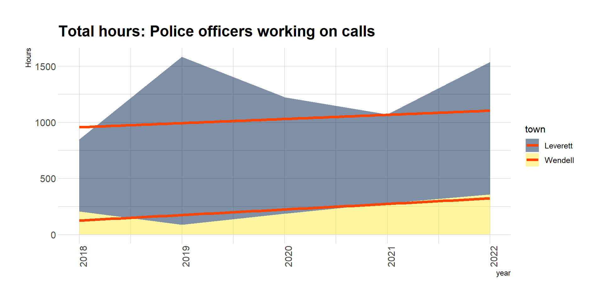
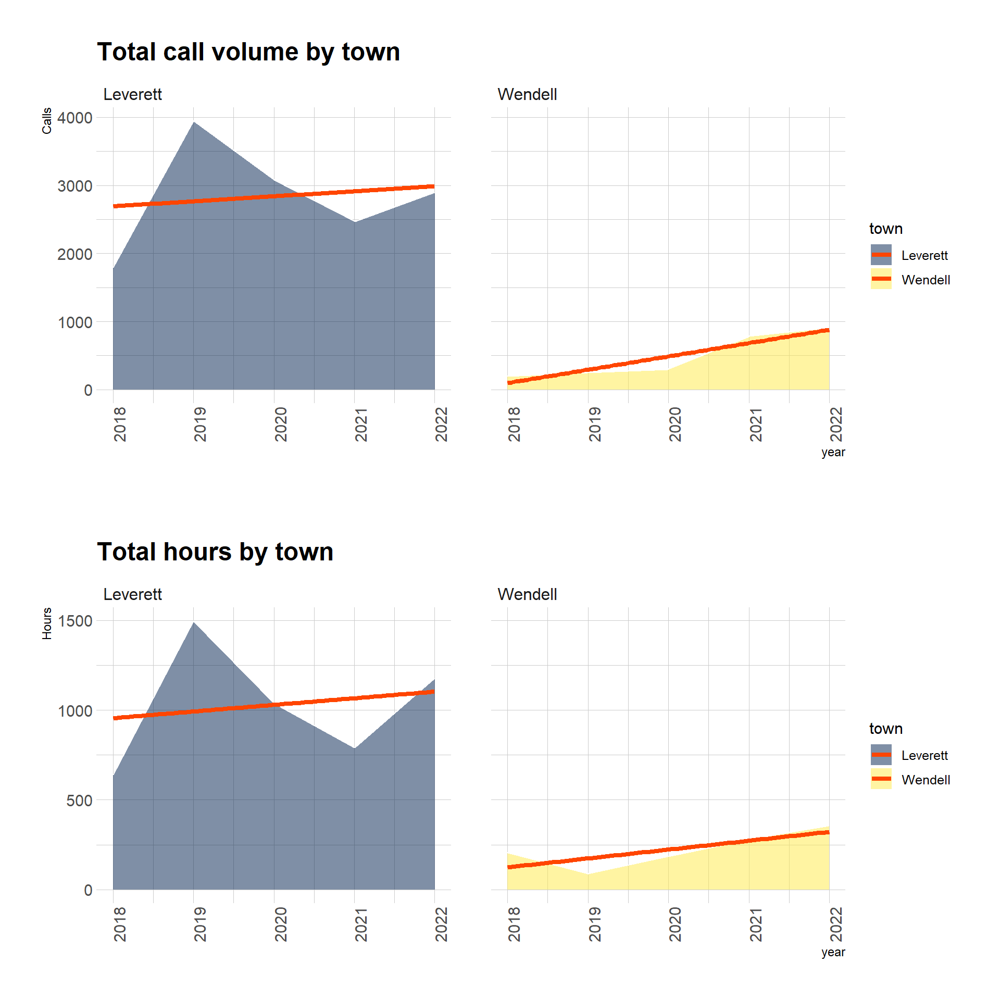
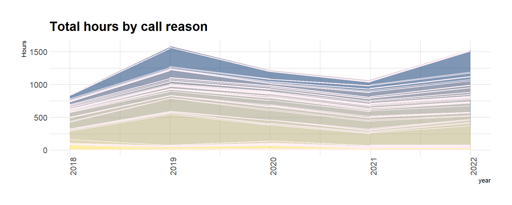
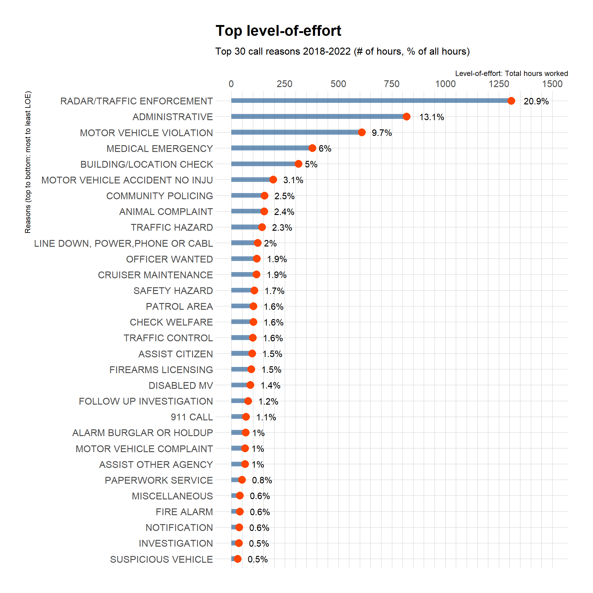
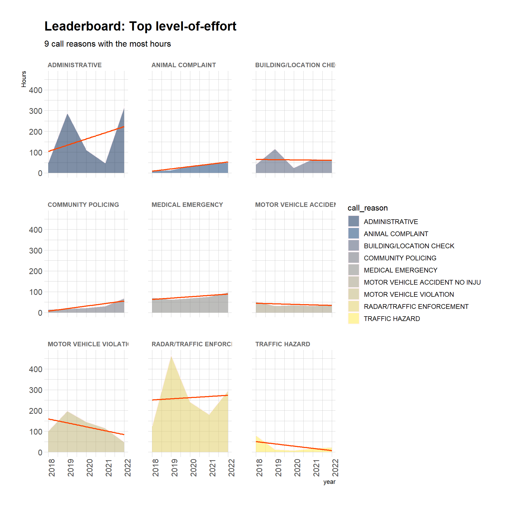
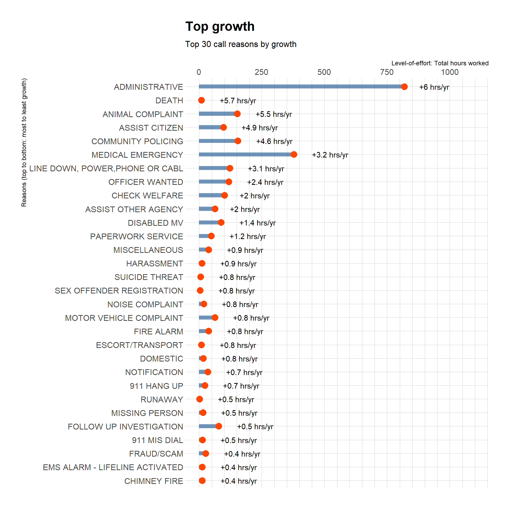
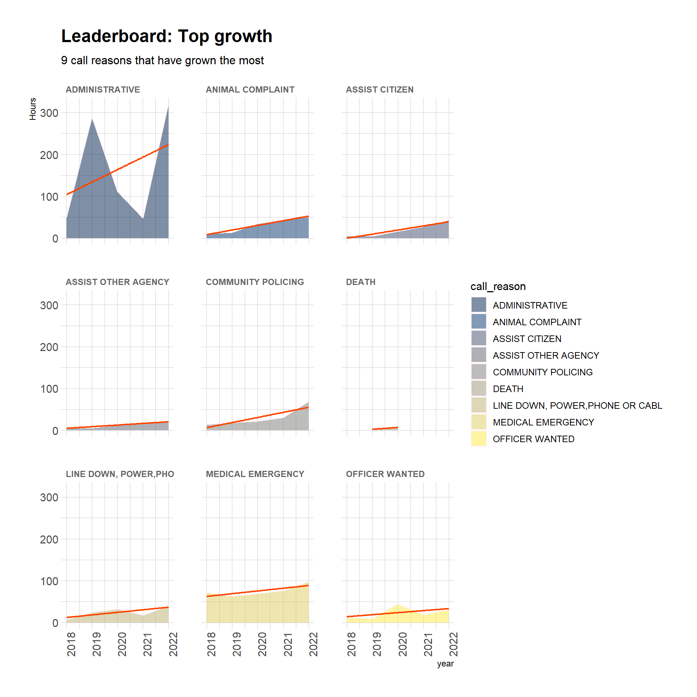
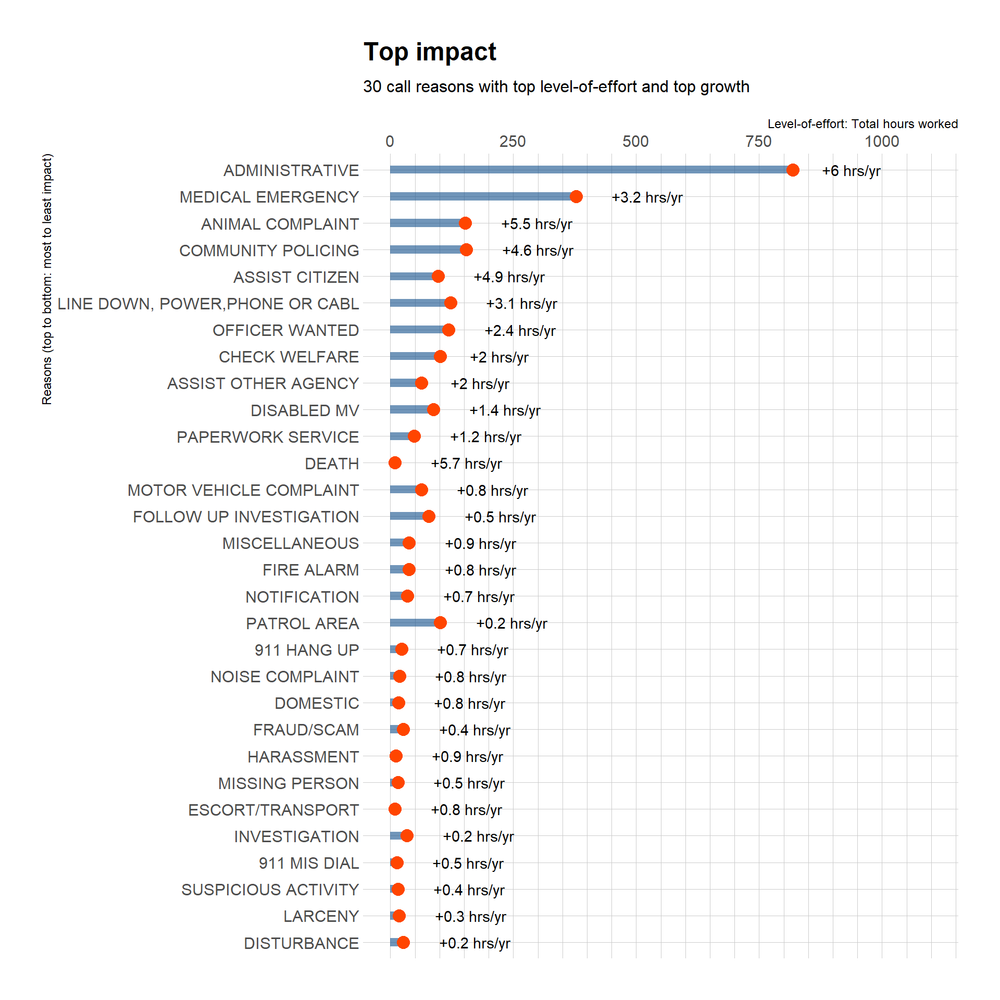
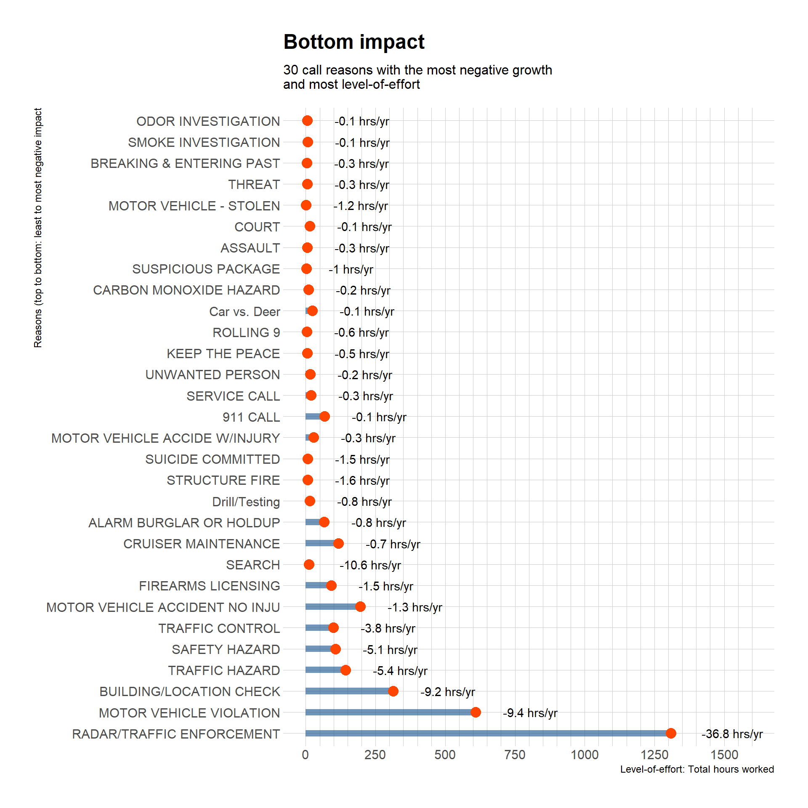

This is the story of two small, rural Massachusetts towns that have made an agreement to combine their local police departments. The goal of the regionalization agreement initiated in 2020 has been to reduce cost by sharing a service. However, regionalization has made it more challenging for the towns to assess public safety expenses.
For example, if demand for first responders has increased, is it because a single police department is now responding to crime from both towns? Or is it for reasons unrelated to regionalization, such as increased police response to medical calls or other calls for which police response is not required?
I intend to use the data collected to better inform budgeting and public safety discussion by public officials in the two towns. Furthermore, the work of regionalized municipal services is a common challenge that small rural towns, strapped for revenue, must consider. Improving how we collect and derive insights from municipal service regionalization data will be a vital service to towns who often don’t have the capacity to organize their own data-driven policy and administration.
Research question
What is the nature of public safety need behind the increase in calls that police respond to?
Background
Since 2020, I have volunteered my time as a community organizer and political office-holder in the small rural town of Leverett, Massachusetts. One of the key challenges of public administration in Leverett is the lack of resources for gathering good evidence for public decision-making.
At the recent budget meetings in Spring 2023, the Leverett Police Chief made a budget request for a fourth full-time officer position. This position would help the Police Department overcome these problems:
Decreased supply of police officer human resources due to state criminal justice reform.
Increased demand for police officer human resources due to increased call volume in the towns of Leverett and Wendell.
Problem #1 in detail
How has state reform decreased supply of police officers?
Since 2021, state POST reform has made it difficult for local police departments to fill their on-duty schedules with reserve officers. Before 2021, reserve officers required half as much training as full-time officers. Reserve officers could work part-time or as a second job in seasonal positions and shifts as-needed. The State of Massachusetts Peace Officer Standards and Training (POST) Commission enacted a reform that required reserves to train as much as full-time officers. This has removed an incentive for people to become or remain reserve officers. The pool of reserve officers is shrinking. Local police departments, struggling to meet their scheduling needs, resort to requests for more full-time positions.
Problem #2 in detail
How much and why has call volume increased in Leverett and Wendell?
Since 2020, when the Wendell chief of police retired, the neighboring towns of Leverett and Wendell have agreed to combine their municipal police service. Wendell closed its own police department (WPD) and began to allocate budget revenue to the Leverett Police Department (LPD). LPD took responsibility for responding to police and emergency calls from both Leverett and Wendell. This regionalization of municipal service is expected to reduce public safety costs over time. However, the Leverett Finance Committee observed at a 2023 budget hearing that Leverett has been paying more than its share of police expenses. Meanwhile, citing an increase in call volume, LPD is still working out how to adapt to two towns’ worth of demand for police service.
To solve these problems, Leverett Chief of Police Scott Minckler proposed that Leverett hire a fourth full-time officer.
The request was approved by the Leverett and Wendell Police Services Oversight committee, the Leverett Personnel Board, and the Leverett Finance Committee. When the matter came before the Leverett Selectboard budget meeting, some members of town government and the public wanted to know more detail about the increase in call volume.
Questions voiced by the public
What types of calls are increasing?
What is the change in personnel time needed per call and per type of call?
What days and times of day do we see the most calls or the most change in calls?
Why do we need another officer when the populations and number of properties in the two towns have not grown substantially?
Chief Minckler’s response to these questions was informed by his administrative experience, but not by thorough call data analysis. Due to difficulties generating reports from the administrative software used by many emergency response departments, the Chief was not able to speak to call data beyond call volume and call type. At public meetings, I heard Leverett residents express curiosity about the nature of increased call volume: How much was due to violent crime, domestic violence, interpersonal conflict, fraud, property rights violations, traffic violations, medical emergencies, mental health emergencies, fires?
Although people had multiple concerns and interests in the matter, most meeting participants had this basic question in common:
Research question
What is the nature of public safety need behind the increase in calls that police respond to?
In other words, if we hired another police officer, would that meet the public safety needs that drive increased call volume? If our increased needs are by nature medical, mental health, fire, or community health and well-being, then we risk misallocating public resources in a solution to the wrong problem.
Dataset Introduction
To collect data that could help understand more about the public safety need of Leverett and Wendell, I submitted this public records request:
Email to PD: Thu, Mar 30, 2023 at 3:00 PM
Subject: Public Records Request for Leverett PD call data To: Scott D. Minckler policechief@leverett.ma.us
Hi Chief Minckler,
I also left a voicemail, but thought it would help to send my request by email. I’ve been learning about the budget requests from last week’s meeting to get a sense of the request and the call volume and any other factors behind the request. It would help if I could learn more about our call data.
I’m writing to request public data to do with Leverett and Wendell calls made to dispatch, and calls handled by our police department, for the 5-year period 2018 to 2022 (inclusive of the years 2018, 2019, 2020, 2021, and 2022). I’m requesting complete police department call detail records, with columns of data redacted if they are subject to specific statutory exemption to the MA Public Records Law due to criteria such as victim confidentiality.
Please export data from your call management software application to CSV or XLSX files, rather than PDF or Word documents. The tabular CSV or XLSX format will facilitate data analysis.
If the export files are too large for email attachment, please upload to this Drive location:
url omitted
Thanks! Let me know if you have any questions or feedback.
Tim Shores
Chief Minckler called me the following Monday morning to discuss the request. He could supply reports, but not at the level of detail that I requested. I also learned from Chief Minckler that one reason for the growth of calls in Wendell was that the former police chief of Wendell did not record every call. This was not made known at the time when the two towns negotiated their regionalization agreement.
I spoke with Supervisor Butch Garrity of Shelburne Dispatch, which serves as the 911 dispatcher for most towns in Franklin County, including Leverett and Wendell. The dispatch center and local agencies have used a client-server application called IMC-Central Square since 1997 to manage dispatch calls and responses. The application has a reputation for being difficult to use and limited in functionality.
IMC-Central Square report limitations
The report export format was limited to PDF.
They could only provide call summary data. It was not practical to provide call detail data that would include relevant information (such as call day and time of day, location, demographics of people involved, and details of actions taken by responding officers) because Central Square has no redaction functions.
These software limitations have come up before in Leverett. In 2020, while researching a report on policing and the experience of people of color in town, the Leverett Social Justice Committee (SJC) submitted multiple requests for police call data that included race and ethnicity of people involved. LPD claimed that they were not able to comply because they were unable to generate the reports. The SJC met with someone at Amherst PD, which uses the same software, who offered to meet with LPD about how to generate IMC-Central Square reports. I am not aware of any follow-through on that offer for inter-departmental collaboration on the SJC public records request.
Based on my career experience with numerous database systems, I’m confident that technical means exist to overcome these functional limits. However, I take the claims of the LPD and Shelburne Dispatch to be made in good faith. At the end of the day, it comes down to a lack of resources, and as a researcher I must set my expectations accordingly.
Chief Minckler sent me 10 PDF files: one for each town and year, from 2018 to 2022. Each file includes 3 tables:
Source report structure
Call Reason Breakdown shows the number of calls for each call reason, average time per call per call reason, and the type and number of actions taken in response to each call reason.
Call Action Breakdown shows summaries of call actions.
Operator Race and Sex Breakdown shows summary demographics of vehicle operators involved in traffic stops and violations.
Call Reason Breakdown is the the only object of this analysis. CSV exports of all three data frames are available in the bibliography.
I used the R libraries purrr and pdf_tools to read-in the data to a list of 10 lists of data frames: one data frame for each page, one list for each file, in a collection of 10 files.
Code
# creates fs_path vector of each file in that directoryprojectFiles <-dir_ls('../posts/TimShores_FinalProject_Data') # I have csv files in that folder for public sharing ... remove them from vector.projectFiles <- projectFiles[grepl('\\.pdf$', projectFiles)]projectFiles_list <- projectFiles %>%map(pdf_data) # purrr function that applies pdf_data reading function to each file element of fs_path vector# map creates a list of lists of tibbles (a tibble for each page of each pdf)# now that I've consumed my files I can str_replace to get town and year info from each filename.projectFiles <- projectFiles %>%str_replace('../posts/TimShores_FinalProject_Data/', '') %>%str_replace('.pdf', '') names(projectFiles_list) <- projectFiles
I took the following general steps to parse this list:
Data transformation steps
Mutated each row with information about the town, year, and source page number.
Flattened the nested list of data frames into a single data frame.
Used pivot_wider to create columns based on PDF page x coordinates coordinates recorded for each observation by pdf_data. The x coordinates help identify column boundaries in the original report: each column had a minimum and maximum value for x.
Plyered apart the tables according to their distinct meanings into separate data frames: call reasons, call actions, and operator demographics.
Filtered out or filled in all NA values. Every observation in the original reports had values for every variable. Plyering into separate data frames leaes blanks or NAs where the original report format staggers. Therefore, I interpret NA to indicate that I must remove the row or fill in the variable with a sub-heading value. The end result is three data frames with no NAs.
See my comments in the code block below for details.
Code
# This next part took a couple days of searching for a tidy solution. # Then I just decided to use a good old-fashioned nested for loop.# The structure of the original documents is that each of 10 files has a variable number of pages.# Therefore, the projectFiles_list structure is a nested list of dataframes: list[[list]][[dataframe]]. # I want to mutate each df with the page number from its PDF, or "innerpageid". # Inner pagination corresponds to each dataframe's nested list element index (j in list[[i]][[j]]) which # is information that gets destroyed as soon as I map to an unnested list. I couldn't find a tidy solution to capturing that nested# "inner" page id before the map, so I used a nested for loop to assign value to innerpageid before appending my mapped/mutated df to# a new single-layer list.allYearsList <-list()for (i inseq_along(projectFiles_list)) { # seq_along(projectFiles_list) creates vector with a number value for each list elementfor (j inseq_along(projectFiles_list[[i]])) { projectFiles_list[[i]][[j]] <-mutate(projectFiles_list[[i]][[j]], innerpageid = j) } allYearsList <-append(allYearsList, map2(projectFiles_list[[i]], names(projectFiles_list[i]), ~.x %>%mutate(filename = .y) ) ) }# this bind_rows takes all of the df observations from all of the list elements and binds them together in a single df.# outerpageid is the 'page' number in an absolute sequence (1 to 78 in this case) rather than segmented by file (1 to 9, 1 to 7 etc.)# Note that outerpageid is not particularly important (it's semantically identical to town, year, innerpageid) # and I should remove this scaffold.allYearsDF <- allYearsList %>%bind_rows(.id ='outerpageid') %>%relocate(c(filename, innerpageid), .after = outerpageid) %>%filter(height ==11& y >13& text !="Action:")# this creates a problem of staggered linesallYearsDF_wide <- allYearsDF %>%pivot_wider(id_cols =c(outerpageid, filename, innerpageid, y), names_from = x, values_from = text)# solution from https://stackoverflow.com/questions/45515218/combine-rows-in-data-frame-containing-na-to-make-complete-row# Supply lists by splicing them into dots:coalesce_by_column <-function(df) {return(dplyr::coalesce(!!!as.list(df)))}allYearsDF_wide <- allYearsDF_wide %>%mutate(outerpageid =as.integer(outerpageid))allYearsDF_wide <- allYearsDF_wide %>%group_by(outerpageid, filename, innerpageid, y) %>%# outerpageid is redundant heresummarise_all(coalesce_by_column) %>%ungroup()# do I need to ungroup() ? doesn't seem to hurt!# it will help to order columns by numeric order - they are the x coords from left to right. This looks for all non-alpha column names.numcols =sort(as.numeric(names(allYearsDF_wide)[!grepl("[a-z]", names(allYearsDF_wide))]))allYearsDF_wide <-select(allYearsDF_wide, outerpageid, filename, innerpageid, y, match(numcols, names(allYearsDF_wide))) # now we have a df that is simply x:y coordinates of the page# time to smush cols together, yay smush!allYearsDF_wide <- allYearsDF_wide %>%unite("x5to52", c("5":"47"), sep =" ", na.rm =TRUE, remove =TRUE) %>%unite("x53to197", c("53":"197"), sep =" ", na.rm =TRUE, remove =TRUE) %>%unite("x198to238", c("198":"233"), sep =" ", na.rm =TRUE, remove =TRUE) %>%unite("x239to280", c("239":"270"), sep =" ", na.rm =TRUE, remove =TRUE) %>%unite("x281to329", c("281":"329"), sep =" ", na.rm =TRUE, remove =TRUE) %>%unite("x330to371", c("330":"371"), sep =" ", na.rm =TRUE, remove =TRUE) %>%unite("x372to449", c("372":"431"), sep =" ", na.rm =TRUE, remove =TRUE) %>%unite("x450toEnd", c("450":"545"), sep =" ", na.rm =TRUE, remove =TRUE)# note that spacing does differ on each page (as indicated by the colnames), but the boundaries are stable# (as indicated by the united colnames -- I manually confirmed the minimum pixel position of each column on each data frame)# final tidying of Call_Reason text separated into different columns# this sequence of conditionals looks through new columns named after PDF page x coordinates # then pastes values depending on their x coords, reconstructing variables # from PDF text box fragmentsallYearsDF_wide <- allYearsDF_wide %>%mutate(x5to52 =ifelse(nchar(x5to52, type="chars") >0&nchar(x53to197, type="chars") >0, paste0(x5to52," ",x53to197), paste0(x5to52)),x53to197 =ifelse(nchar(x5to52, type="chars") >0, paste0(""), paste0(x53to197)), # delete from additional columnsx53to197 =ifelse(x53to197 =="", paste0(""), paste0(x53to197, " ", x198to238, " ", x239to280, " ", x281to329, " ", x330to371, " ", x372to449, " ", x450toEnd)),x198to238 =ifelse(nchar(x53to197, type="chars") >0,paste0(""), paste0(x198to238)), # delete from add'l colsx239to280 =ifelse(nchar(x53to197, type="chars") >0,paste0(""),paste0(x239to280)), # delete from add'l colsx281to329 =ifelse(nchar(x53to197, type="chars") >0,paste0(""), paste0(x281to329)), # delete from add'l colsx330to371 =ifelse(nchar(x53to197, type="chars") >0, paste0(""), paste0(x330to371)), # delete from add'l colsx372to449 =ifelse(nchar(x53to197, type="chars") >0,paste0(""), paste0(x372to449)), # delete from add'l colsx450toEnd =ifelse(nchar(x53to197, type="chars") >0,paste0(""),paste0(x450toEnd)) # delete from add'l cols )# replace blanks with NAs in the 2nd and 3rd cols. allYearsDF_wide <- allYearsDF_wide %>%mutate_at(c(5,6), ~na_if(., '')) # I tried this using paste in the previous mutate, but the result was a text string "NA", not an NA.# label each action with its call reasonallYearsDF_wide <- allYearsDF_wide %>%fill(x5to52, .direction ="down") %>%# populate rows to support normalizationmutate(x53to197 =ifelse(row_number() ==1, "Action", x53to197)) # create a column namecolnames(allYearsDF_wide)[-c(1:4)] <- allYearsDF_wide[1,-c(1:4)] # set values from the first row to column headings allYearsDF_wide <- allYearsDF_wide %>%# tidy column namesrename_with(tolower) %>%rename_with(~gsub("._", "_", .x, fixed =TRUE)) %>%rename_with(~gsub("@", "at", .x, fixed =TRUE)) %>%rename(avg_hours_to_arrive = avg_arrive,avg_hours_at_scene = avg_time_at_scene) %>%filter(innerpageid !=1| y !=69| call_reason !="Call_Reason") %>%# some y values reliably indicatefilter(self !="Self_Init") %>%# headers/footers on source PDF page formatseparate_wider_regex(filename, c(town ="^[A-Za-z]+", year ="[0-9]{4}$")) %>%# sep filename into town and yearmutate(town =factor(town),year =make_date(year =as.integer(year), month =1, day =1)) %>%select(-c(total, "___%")) %>%# this is a total column - don't need itmutate(across(call_reason:avg_hours_at_scene, ~na_if(., "")))# First df achievement unlocked: Call ReasonscallReasonsDF <- allYearsDF_wide %>%filter(is.na(action)) %>%filter(!is.na(self)) %>%select(town, year, call_reason, self, disp, avg_hours_to_arrive, avg_hours_at_scene) %>%mutate(call_reason =factor(call_reason)) %>%mutate_at(c("self", "disp"), as.integer) %>%mutate_at(c("avg_hours_to_arrive", "avg_hours_at_scene"), as.numeric) %>%mutate(avg_hours_to_arrive =ifelse(is.na(avg_hours_to_arrive), 0, avg_hours_to_arrive),avg_hours_per_call = avg_hours_to_arrive + avg_hours_at_scene,avg_hours_per_call = avg_hours_per_call /60, # convert times to hourstotalCalls = self + disp,totalHours = totalCalls * avg_hours_per_call) %>%select(-c(avg_hours_to_arrive, avg_hours_at_scene)) %>%filter(!grepl("total", call_reason, ignore.case =TRUE)) # Final step, get rid of of rows with call_reason = TOTAL# Second df achievement unlocked: Call Actions (each call reason has 1+ actions)# (note: not used in the current version of the analysis, # but a link to the file is made available in the bibliographycallActionsDF <- allYearsDF_wide %>%filter(!is.na(action)) %>%filter(!grepl("total", call_reason, ignore.case =TRUE)) %>%select(c(town, year, call_reason, action)) %>%separate_wider_regex(action, c(actionname =".+", " = ", actioncount =".*")) %>%mutate(call_reason =factor(call_reason),actionname =factor(actionname),actioncount =str_squish(actioncount),actioncount =as.integer(actioncount))# Third and final df achievement unlocked: Operator demographics, not explicitly related to call reasons/actions,# But we can confidently assume that "operator" means "driver of vehicle"# (note: not used in the current version of the analysis, # but a link to the file is made available in the bibliographyoperatorSummaryDF <- allYearsDF_wide %>%filter(!is.na(action)) %>%filter(grepl("total", call_reason, ignore.case =TRUE)) %>%mutate(opcategory =str_extract(action, "Sex|Race|Ethnicity")) %>%fill(opcategory) %>%filter(!grepl("total", action, ignore.case =TRUE)) %>%rename(opid = action) %>%select(c(town, year, opcategory, opid)) %>%separate_wider_regex(opid, c(opid ="[A-Za-z/\\-\\s]+", opcount ="\\s[0-9]{1,3}", ".+")) %>%mutate(opcategory =factor(opcategory),opid =str_squish(opid),opid =factor(opid),opcount =str_squish(opcount),opcount =as.integer(opcount))
See the appendix for a data dictionary and sample summaries of each data frame.
The LPD call data does not show when police response is required or optional. There are also 121 call reasons. To make analysis simpler and yield insights about public safety need, I created 10 “public safety themes” and mapped one to each call reason. This is my interpretation of call reasons to create a taxonomy that permits interpretations of calls according to when police response is required in comparison with the calls that a police officer responds to because another type of first responder is not available. I will remain open to feedback and referrals to standard taxonomies, if any exist. One of the dilemmas of analyzing police data is a lack of clear policing data standards.
Public safety themes
Administration
Fire
Medical
Mental Health or Social Work
Nonviolent Crime
Other Safety
Prevention
Utility
Vehicular
Violent Crime
Code
# a vector of all the factors, because I need to create a simpler taxonomycallReasonNameFactors =c("209A SERVICE", "209A VIOLATION", "911 CALL", "911 HANG UP", "911 MIS DIAL", "911 Text to 911", "ABANDONED 911 CALL", "ABANDONED MV", "ADMINISTRATIVE", "ALARM BURGLAR OR HOLDUP", "ANIMAL COMPLAINT", "ANNOYING PHONE CALLS", "ARTICLES LOST", "ARTICLES RECOVERED", "ASSAULT", "ASSIST CITIZEN", "ASSIST OTHER AGENCY", "BE ON THE LOOK OUT", "BREAKING & ENTERING AUTO", "BREAKING & ENTERING PAST", "BREAKING AND ENTERING", "BRUSH FIRE", "BUILDING/LOCATION CHECK", "BURN/AGRI PERMIT", "BYLAW VIOLATION", "Car vs. Deer", "CARBON MONOXIDE HAZARD", "CHECK WELFARE", "CHIMNEY FIRE", "Civil Issue", "COMMUNITY POLICING", "COMPLAINT", "COURT", "CRUISER MAINTENANCE", "CSO FOLLOW UP", "CSO OUTREACH", "CUSTODY ISSUE", "DEATH", "DETAIL REQUEST", "DISABLED MV", "DISTURBANCE", "DOMESTIC", "Drill/Testing", "DRUG OFFENSE", "DRUNK", "EMS ALARM - LIFELINE ACTIVATED", "ESCORT/TRANSPORT", "EXPLOSION", "FIGHT", "FIRE ALARM", "FIRE WORKS", "FIRE, OTHER NON-SPECIFIC", "FIREARMS LICENSING", "FOLLOW UP INVESTIGATION", "FRAUD/SCAM", "GAS LEAK", "GENERAL INFO", "HARASSMENT", "HIT AND RUN", "ILLEGAL BURN", "ILLEGAL DUMPING", "INVESTIGATION", "JUVENILE OFFENSES", "KEEP THE PEACE", "LARCENY", "LINE DOWN, POWER,PHONE OR CABL", "LOCKOUT", "MEDICAL EMERGENCY", "MISCELLANEOUS", "MISSING PERSON", "MOTOR VEHICLE - STOLEN", "MOTOR VEHICLE ACCIDE W/INJURY", "MOTOR VEHICLE ACCIDENT NO INJU", "MOTOR VEHICLE COMPLAINT", "MOTOR VEHICLE RECOVERED", "MOTOR VEHICLE VIOLATION", "NOISE COMPLAINT", "NOTIFICATION", "ODOR INVESTIGATION", "OFFICER WANTED", "OPEN DOOR", "Paid Detail", "PAPERWORK SERVICE", "PARKING COMPLAINT", "PATROL AREA", "POWER OUTAGE/FAILURE", "RADAR/TRAFFIC ENFORCEMENT", "RAPE", "REPOSSESSION", "RESCUE CALL", "ROLLING 9", "ROLLING Q2-1", "RUNAWAY", "SAFETY HAZARD", "SCHOOL RESOURCE OFFICER DUTIES", "SEARCH", "Section 12", "SERVE WARRANT", "SERVICE CALL", "SEX OFFENDER REGISTRATION", "SHOPLIFTING", "SHOTS FIRED", "SMOKE INVESTIGATION", "SOLICITING", "STRUCTURE FIRE", "SUICIDE COMMITTED", "SUICIDE THREAT", "SUMMONS SERVICE", "SUSPICIOUS ACTIVITY", "SUSPICIOUS PACKAGE", "SUSPICIOUS PERSON", "SUSPICIOUS VEHICLE", "SWATTING", "THREAT", "TRAFFIC CONTROL", "TRAFFIC HAZARD", "TRESPASS", "TRUANT", "UNWANTED PERSON", "VANDALISM", "VEHICLE FIRE")# here is that simpler taxonomy!callReasonNameThemes =c("Mental Health or Social Work", "Mental Health or Social Work", "Other Safety", "Administration", "Administration", "Administration", "Administration", "Vehicular", "Administration", "Violent Crime", "Other Safety", "Other Safety", "Other Safety", "Administration", "Violent Crime", "Other Safety", "Other Safety", "Other Safety", "Nonviolent Crime", "Nonviolent Crime", "Violent Crime", "Fire", "Prevention", "Fire", "Nonviolent Crime", "Vehicular", "Fire", "Prevention", "Fire", "Mental Health or Social Work", "Prevention", "Other Safety", "Administration", "Administration", "Mental Health or Social Work", "Mental Health or Social Work", "Mental Health or Social Work", "Other Safety", "Administration", "Vehicular", "Other Safety", "Violent Crime", "Administration", "Mental Health or Social Work", "Mental Health or Social Work", "Medical", "Other Safety", "Fire", "Violent Crime", "Fire", "Fire", "Fire", "Administration", "Administration", "Nonviolent Crime", "Utility", "Administration", "Nonviolent Crime", "Violent Crime", "Fire", "Nonviolent Crime", "Administration", "Mental Health or Social Work", "Prevention", "Nonviolent Crime", "Utility", "Other Safety", "Medical", "Other Safety", "Other Safety", "Nonviolent Crime", "Medical", "Vehicular", "Vehicular", "Vehicular", "Vehicular", "Nonviolent Crime", "Administration", "Other Safety", "Other Safety", "Prevention", "Administration", "Administration", "Vehicular", "Prevention", "Utility", "Vehicular", "Violent Crime", "Other Safety", "Other Safety", "Vehicular", "Vehicular", "Mental Health or Social Work", "Other Safety", "Administration", "Other Safety", "Mental Health or Social Work", "Administration", "Administration", "Prevention", "Nonviolent Crime", "Violent Crime", "Fire", "Nonviolent Crime", "Fire", "Mental Health or Social Work", "Mental Health or Social Work", "Administration", "Prevention", "Prevention", "Prevention", "Prevention", "Violent Crime", "Nonviolent Crime", "Vehicular", "Vehicular", "Nonviolent Crime", "Mental Health or Social Work", "Other Safety", "Nonviolent Crime", "Fire")factorThemesDF <-data.frame(call_reason = callReasonNameFactors, call_theme = callReasonNameThemes) %>%mutate(call_reason =factor(call_reason),call_theme =factor(call_theme))callReasonsDF <-left_join(callReasonsDF, factorThemesDF, by ='call_reason')callActionsDF <-left_join(callActionsDF, factorThemesDF, by ='call_reason')
Analysis Plan
My goal is to analyze and visualize call data in answer to this question:
Research question
What is the nature of public safety need behind the increase in calls that police respond to?
My analysis plan is to answer the following more specific questions for both towns together, and compared between towns:
Specific questions for analysis
Has the time spent doing police work grown over time?
Leverett and Wendell began a regionalization agreement in 2020. How has that impacted the data of time spent on calls?
Which call reasons require the most personnel time?
What call reasons have grown the most over time, in terms of personnel time?
What call reasons have decreased the most in terms of personnel time?
What can we learn about the public safety impact of change in calls in terms of broad themes?
Results: Analysis and Visualization
To prepare my data for presentation of growth trends compared between call reasons and themes over time, the first code chunk uses grouping and linear regression to calculate estimates of correlation coefficients, and joins and a tribble to package the results together in data frames that make for easier presentation.
Code
# creating summary DFs, first step is to estimate change in hours per year# will do this for each factor: call_reason, town, call_theme########## trying out this awesomeness to model estimated change in hours each year for each call reason factor# https://r4stats.com/2017/04/18/group-by-modeling-in-r-made-easy/tempGroupDF <- callReasonsDF %>%group_by(call_reason) %>%mutate(year =as.integer(year(year))) # I convert to integer to pass to tidy() below# This way tidy() returns a model estimate with year unit as predictor# If I left it as a date, the model estimate unit would be 1 day rather than 1 year# this next df assignment produces a correlation of determination estimate of hourly increase with year as a predictor:# For each factor call reason, the estimate is how many hours we expect the factor to change in 1 year.# note that this does not meet the test for statistical significance - p-values in this model are higher than is acceptable.# this is primarily meant to determine order of factors in terms of predicted change based on the small data set.crHoursEstByYear <-do(tempGroupDF, tidy(lm(totalHours ~ year, data = .))) %>%# tidy() creates a tibble from a linear modelfilter(term =="year") %>%# removes intercept values, not needed for this simple analysismutate(estYearlyHourChange_Reason =round(estimate, 1)) %>%# replacing NA with 0 - small n, assume no growtharrange(desc(estimate)) %>%select(c(call_reason, estYearlyHourChange_Reason))# from https://bookdown.org/pdr_higgins/rmrwr/linear-regression-and-broom-for-tidying-models.html# "the second column is the estimate. This is the point estimate of the effect of each predictor in the multivariable model. For the intraOp_surgerySize predictor, this is 0.316. This means that for each unit or level increase of intraOp_surgerySize, which is defined on a 1-3 scale from small to large, the pacu_30min_throat pain (on a 0-10 scale), increases by 0.316 points. So a large surgery (2 levels larger than small) will result in, on average, a pacu_30min_throat pain score 0.632 points higher than a small surgery."callReasonsDF <- callReasonsDF %>%inner_join(crHoursEstByYear, by =join_by(call_reason))callReasonsDF <- callReasonsDF %>%filter(!is.na(estYearlyHourChange_Reason)) # omit call reasons with NA values estimated growth, these have the lowest incidence rm(tempGroupDF)rm(crHoursEstByYear)tempGroupDF <- callReasonsDF %>%group_by(call_reason) %>%summarize(totalCalls_Reason =sum(totalCalls),totalHours_Reason =sum(totalHours) ) callReasonsDF <- callReasonsDF %>%inner_join(tempGroupDF, by =join_by(call_reason))########## do that again for themetempGroupDF <- callReasonsDF %>%group_by(call_theme) %>%mutate(year =as.integer(year(year))) crHoursEstByYear <-do(tempGroupDF, tidy(lm(totalHours ~ year, data = .))) %>%filter(term =="year") %>%mutate(estYear_HoursByTheme =round(estimate, 1)) %>%arrange(desc(estimate)) %>%select(c(call_theme, estYear_HoursByTheme))callReasonsDF <- callReasonsDF %>%inner_join(crHoursEstByYear, by =join_by(call_theme))callReasonsDF <- callReasonsDF %>%filter(!is.na(estYear_HoursByTheme)) rm(tempGroupDF)rm(crHoursEstByYear)# initialize df for theme: group by yeartempGroupDF <- callReasonsDF %>%group_by(call_theme) %>%summarise(totalCalls_Theme =sum(totalCalls),totalHours_Theme =sum(totalHours), ) callReasonsDF <- callReasonsDF %>%inner_join(tempGroupDF, by =join_by(call_theme))################ summary and linear model (lm) calculations for presentation###crYearDF <- callReasonsDF %>%group_by(year) %>%summarize(totalCalls =sum(totalCalls),totalHours =sum(totalHours) )crTownYearDF <- callReasonsDF %>%group_by(town, year) %>%summarise(totalCalls =sum(totalCalls),totalHours =sum(totalHours), )crTownYearThemeDF <- callReasonsDF %>%group_by(town, year, call_theme) %>%summarise(totalCalls =sum(totalCalls),totalHours =sum(totalHours), )# Calculate growth percentage of hours workedcrYeargrowthPct <-as.character(paste0(round( (crYearDF[5,3] - crYearDF[1,3]) / crYearDF[1,3] *100, 1)[[1]],"%"))crLevgrowthPct <-as.character(paste0(round( (crTownYearDF[5,4] - crTownYearDF[1,4]) / crTownYearDF[1,4] *100, 1)[[1]],"%"))crWengrowthPct <-as.character(paste0(round( (crTownYearDF[10,4] - crTownYearDF[6,4]) / crTownYearDF[6,4] *100, 1)[[1]],"%"))# calculate linear model coefficient estimate of x (hour increase by year)crYeargrowthLM <-round(lm(totalHours ~year(year), data = crYearDF)$coefficients[2], 1)crYeargrowthLMChar <-as.character(crYeargrowthLM)crLevgrowthLM <-round(lm(totalHours ~year(year), data =filter(crTownYearDF, town =="Leverett") )$coefficients[2], 1)crWengrowthLM <-round(lm(totalHours ~year(year), data =filter(crTownYearDF, town =="Wendell") )$coefficients[2], 1)# calculate weekly hour increase per lmcrYeargrowthLMweekChar <-as.character(round(crYeargrowthLM /52, 1))crYeargrowthLMweek <-round(crYeargrowthLM /52, 1)crLevgrowthLMweek <-round(crLevgrowthLM /52, 1)crWengrowthLMweek <-round(crWengrowthLM /52, 1)# assume standard 40-hour work weekassumedFTE <-40# calculate hour increase per lm in terms of weekly FTEcrYeargrowthFTE <-round(crYeargrowthLM /52/ assumedFTE, 2)crYeargrowthFTEChar <-as.character(round(crYeargrowthLM /52/ assumedFTE, 2))crLevgrowthFTE <-round(crLevgrowthLM /52/ assumedFTE, 2)crWengrowthFTE <-round(crWengrowthLM /52/ assumedFTE, 2)###### end of summary and lm calculations ###### now assign to df for presentation:crtyGrowthDF <-tribble(~town, ~total_growth, ~yr_hr_growth, ~wk_hr_growth, ~fte_growth,"Leverett", crLevgrowthPct, crLevgrowthLM, crLevgrowthLMweek, crLevgrowthFTE,"Wendell", crWengrowthPct, crWengrowthLM, crWengrowthLMweek, crWengrowthFTE,"Both Towns", crYeargrowthPct, crYeargrowthLM, crYeargrowthLMweek, crYeargrowthFTE)
Total hours working on calls
The first question for a municipal department is about what impacts the budget. For this, three key metrics are call volume, average hours worked per call reason, and total hours worked. I took these steps to create the first plot:
Grouped by call reason and town to summarize hours.
Constructed an area plot with an lm trend line.
The change in total hours worked over time shows the big picture:
Code
### first plot shows the big picture: change in total hourscallReasonsDF %>%group_by(year, town) %>%summarize(totalHours =sum(totalHours) ) %>%ggplot(aes(x = year, y = totalHours, fill = town)) +geom_area(alpha =0.5) +labs(title ="Total hours: Police officers working on calls",y ="Hours") +geom_smooth(method = lm,se =FALSE, linewidth =1.5,color ="orangered") +scale_fill_viridis(discrete = T, option ="cividis") +theme_ipsum() +theme(axis.text.x =element_text(angle =90))

The big picture shows 81.2% growth in total hours worked by police officers in the two towns together from 2018 to 2022.
Another way to express this is with a linear model, the orange trend line: we’ve seen the two towns add 86.3 hours of policing every year. This could be useful for the town’s personnel planning. Assuming a 40-hour full-time equivalence (FTE) and an increase of 86.3 hours per year (or 1.7 hours per week), Leverett and Wendell police call hours grow by 0.04 FTE each year.
For these simple models, I have omitted call reasons with incidence too low to calculate estimated growth. These had NA values for the correlation coefficient which complicates the analysis, and since these call reasons are so infrequent their omission is not to the detriment of analysis.
This answers the first question:
Specific question for analysis
Has the time spent doing police work grown over time?
An answer!
Yes, Leverett and Wendell added 86.3 hours of policing, or 0.04 FTE, every year from 2018 to 2022
Note that 2,080 hours is a year’s worth of FTE, and the call data show that the total hours spent policing in both towns is less than 1 FTE.
Call hour workload is an important factor in public safety personnel management. There is also the need for sufficient coverage so officers are available to respond to calls when they come in. There is also the self-determination of the community: the people who live in a town contribute by right to decisions about public safety. Although these are both necessary elements of a full understanding of policing and public safety, they’re beyond the scope of this analysis.
Comparing towns
What else could we learn from this data set about what drives this growth in policing?
A simple next step is to compare the towns. Faceting by town lets us compare the change in calls and hours worked over the 5-year period:
Code
# total call volume by towng1 <- crTownYearDF %>%ggplot(aes(x = year, y = totalCalls, fill = town)) +geom_area(alpha =0.5, color ="white") +labs(title ="Total call volume by town",y ="Calls") +geom_smooth(method = lm,se =FALSE, linewidth =1.5,color ="orangered") +scale_fill_viridis(discrete = T, option ="cividis") +theme_ipsum() +theme(axis.text.x =element_text(angle =90)) +facet_wrap(vars(town))# total hours by towng2 <- crTownYearDF %>%ggplot(aes(x = year, y = totalHours, fill = town)) +geom_area(alpha =0.5, color ="white") +labs(title ="Total hours by town",y ="Hours") +geom_smooth(method = lm,se =FALSE, linewidth =1.5,color ="orangered") +scale_fill_viridis(discrete = T, option ="cividis") +theme_ipsum() +theme(axis.text.x =element_text(angle =90)) +facet_wrap(vars(town))grid.arrange(g1, g2, nrow =2)

Most calls come from Leverett and the LPD works most hours in response to Leverett calls. Orange trend lines have a positive slope on all 4 plots, slightly more so for Wendell. This means that there is a positive correlation coefficient when using year as a predictor of total hours: positive growth over time.
Using the same analysis that I applied to total hours, this table summarizes rates of change that correspond to the orange trend line in these plots:
Growth trends: Total hours by town
Code
crtyGrowthDF
This reveals that Wendell, despite their low proportion of calls and hours, has driven most growth in calls compared with Leverett.
It’s more accurate and fair to say that missing data from Wendell has driven the appearance of more than half of the rate of growth in the data. As described earlier, I learned from my discussion with LPD Chief Minckler that Wendell’s former police chief didn’t log calls consistently. Improved data input by LPD officers has created a more accurate record of policing in Wendell. It’s possible to use this data set to estimate Wendell’s past police call data, but that’s beyond the scope of this analysis.
Specific questions for analysis
Leverett and Wendell began a regionalization agreement in 2020. How has that impacted the data of time spent on calls?
An answer!
By taking responsibility for policing in Wendell, LPD officers have improved call data about Wendell policing, bringing it up to LPD quality. When summarizing data inclusively before and after regionalization, Wendell shows 73.1% growth in hours on calls from 2018 to 2022 – or what appears to be 0.9 additional hours of police work every week.
Anecdotally, I learned from LPD Chief Minckler that the previous Wendell police chief did not log all calls. This probably explains Wendell’s high rate. Two to three years from now, LPD will have more data and experience to support a confident assessment of Wendell’s true policing needs.
Comparing call reasons
With 122 factor levels, the plot of total hours by call reason is a blur and the legend would take up the whole page. This plot is only useful to show the complication of grouping by call reasons:
Code
crYearReason <- callReasonsDF %>%group_by(year, call_reason) %>%summarize(totalCalls =sum(totalCalls),totalHours =sum(totalHours) )crYearReason %>%ggplot(aes(x = year, y = totalHours, fill = call_reason)) +geom_area(alpha =0.5, show.legend =FALSE, color ="lavenderblush") +labs(title ="Total hours by call reason",y ="Hours") +scale_fill_viridis(discrete = T, option ="cividis") +theme_ipsum() +theme(axis.text.x =element_text(angle =90))

Code
# will use this in next chunk to get proportion of each call reason factorgrandTotalHours =round(sum(callReasonsDF$totalHours), 0)grandTotalHoursChar =as.character(format(grandTotalHours, big.mark =",", scientific =FALSE))
Top level-of-effort call reasons
Grouping by call_reason and summing total hours allows me to learn which types of calls take the most time. This lollipop plot shows the top 30 call reasons in terms of hours worked in both towns over the 5-year period. From 2018 to 2022, there was a grand total of 6,263 hours for all calls in both towns. Each lollipop in the plot shows the absolute number of hours and the percentage of the grand total.
I used factors ordered by linear regression estimates made in a previous code chunk to find the top N call reasons by rate of growth.
Code
# this gets factors of top 30 call reasons by hours workedcrFactorTotals <- callReasonsDF %>%group_by(call_reason) %>%summarise(totalHours =round(sum(totalHours), 1) ) topHourFactors <- crFactorTotals %>%arrange(desc(totalHours)) %>%head(n =30) %>%droplevels.data.frame() # discard the empty factor levelscallReasonsDF %>%group_by(call_reason) %>%summarize(totalHours =sum(totalHours),percentOfAllHours =round(totalHours / grandTotalHours *100, 1) ) %>%mutate(call_reason =fct_reorder(call_reason, totalHours)) %>%filter(call_reason %in%c(levels(topHourFactors[[1]]))) %>%# this uses topHourFactors to target factors for removal# it works in this plot but not the next one...droplevels.data.frame() %>%ggplot(aes(x = totalHours, y = call_reason)) +geom_bar(stat ="identity", fill ="dodgerblue4", alpha = .6, width =0.3) +geom_point(size =4, color ="orangered") +geom_text(aes(label =paste0(percentOfAllHours, "%"), hjust =-0.5)) +scale_x_continuous(limits =c(0,1500),breaks =seq(0, 1500, 250),minor_breaks =seq(0, 1500, 50),position ="top" ) +labs(title ="Top level-of-effort",subtitle ="Top 30 call reasons 2018-2022 (# of hours, % of all hours)",x ="Level-of-effort: Total hours worked",y ="Reasons (top to bottom: most to least LOE)") +#scale_fill_viridis(discrete = T, option = "cividis") +theme_ipsum()

Specific questions for analysis
Which call reasons require the most personnel time?
An answer!
We can facet plot to zoom in on the top 9 reasons, and see a correlation coefficient for each one. Some trend up, some trend down. This is interesting, but difficult to see a helpful pattern.
Code
# next we only want top 9 reasons with the most total call hourstopHourFactors <- topHourFactors %>%arrange(desc(totalHours)) %>%head(n =9) %>%droplevels.data.frame() # discard the empty factor levels# this uses topHourFactors to target factors for removalcrTopHours <- callReasonsDF %>%group_by(call_reason, year) %>%summarize(totalHours =sum(totalHours),percentOfAllHours =round(totalHours / grandTotalHours *100, 1) ) %>%filter(call_reason %in%c(levels(topHourFactors[[1]]))) %>%droplevels.data.frame() %>%mutate(call_reason =fct_reorder(call_reason, totalHours)) # this fct_reorder isn't working to reorder, although it works in the previous chunkcrTopHours %>%ggplot(aes(x = year, y = totalHours, fill = call_reason)) +geom_area(alpha =0.5, color ="lavenderblush") +geom_smooth(method = lm,se =FALSE, linewidth = .8,color ="orangered",show.legend =FALSE) +labs(title ="Leaderboard: Top level-of-effort",subtitle ="9 call reasons with the most hours",y ="Hours") +scale_fill_viridis(discrete = T, option ="cividis") +theme_ipsum() +theme(axis.text.x =element_text(angle =90)) +facet_wrap(~call_reason) +theme(strip.text.x =element_text(size =9, color ="gray40", face ="bold"))

Top growth call reasons
Since we can calculate a trend line for each call reason, we can identify the call reasons with the steepest trend lines as a representation of call level-of-effort that has grown the most since 2018. The next lollipop plot shows the top 30 call reasons by growth. In parity with the previous plot, the blue and orange lollipops still represent total hours worked.
Code
# this gets factors of top 30 call reasons by growth in hourscrFactorTotals2 <- callReasonsDF %>%group_by(call_reason) %>%summarise(estimateChangeHours =mean(estYearlyHourChange_Reason) ) rm(topHourFactors) # clear the previous dftopHourFactors <- crFactorTotals2 %>%arrange(desc(estimateChangeHours)) %>%head(n =30) %>%droplevels.data.frame() # discard the empty factor levelscallReasonsDF %>%group_by(call_reason) %>%summarize(totalHours =sum(totalHours),percentOfAllHours =round(totalHours / grandTotalHours *100, 1),estYearlyHourChange_Reason =mean(estYearlyHourChange_Reason) ) %>%mutate(call_reason =fct_reorder(call_reason, estYearlyHourChange_Reason)) %>%filter(call_reason %in%c(levels(topHourFactors[[1]]))) %>%# this uses topHourFactors to target factors for removal# does it work in this plot?droplevels.data.frame() %>%ggplot(aes(x = totalHours, y = call_reason)) +geom_bar(stat ="identity", fill ="dodgerblue4", alpha = .6, width =0.3) +geom_point(size =4, color ="orangered") +geom_text(aes(label =paste0("+", estYearlyHourChange_Reason, " hrs/yr"), hjust =-0.5)) +scale_x_continuous(limits =c(0,1100),breaks =seq(0, 1500, 250),minor_breaks =seq(0, 1500, 50),position ="top" ) +labs(title ="Top growth",subtitle ="Top 30 call reasons by growth",x ="Level-of-effort: Total hours worked",y ="Reasons (top to bottom: most to least growth)") +#scale_fill_viridis(discrete = T, option = "cividis") +theme_ipsum()

The top 9 facets by growth reveal somewhat more clearly the public safety landscape of these two towns.
Code
# next we only want top 9 high growth reasons with the most total call hourstopHourFactors <- topHourFactors %>%arrange(desc(estimateChangeHours)) %>%head(n =9) %>%droplevels.data.frame() # discard the empty factor levels# this uses topHourFactors to target factors for removalcrTopGrowthHours <- callReasonsDF %>%group_by(call_reason, year) %>%summarize(totalHours =sum(totalHours),percentOfAllHours =round(totalHours / grandTotalHours *100, 1),estYearlyHourChange_Reason =mean(estYearlyHourChange_Reason) ) %>%filter(call_reason %in%c(levels(topHourFactors[[1]]))) %>%droplevels.data.frame() %>%mutate(call_reason =fct_reorder(call_reason, estYearlyHourChange_Reason)) # this fct_reorder isn't working to reorder the facetscrTopGrowthHours %>%ggplot(aes(x = year, y = totalHours, fill = call_reason)) +geom_area(alpha =0.5, color ="lavenderblush") +geom_smooth(method = lm,se =FALSE, linewidth = .8,color ="orangered",show.legend =FALSE) +labs(title ="Leaderboard: Top growth",subtitle ="9 call reasons that have grown the most",y ="Hours") +scale_fill_viridis(discrete = T, option ="cividis") +theme_ipsum() +theme(axis.text.x =element_text(angle =90)) +facet_wrap(~call_reason) +theme(strip.text.x =element_text(size =9, color ="gray40", face ="bold"))

Or – an important reminder that volume and rate are independent from each other – we may have a set of public safety needs with a mixture of causes. For example, do these rates of change reflect administrative changes in record keeping? Do ‘assist citizen’ and ‘officer wanted’ call trends represent change in public safety needs, or change in how calls are logged? Has the incidence of death been so infrequent, or were calls about a person’s death coded differently during 2019 and 2020? This data won’t answer these questions, but my hope is that people can use this analysis will help prompt and clarify questions like these.
Top impact call reasons
Let’s combine total hours with top growth to get a better sense of call reasons with the most impact.
Code
# this gets factors of top 30 call reasons with top hours worked by growth in hoursrm(crFactorTotals2) # clear the previous dfcrFactorTotals2 <- callReasonsDF %>%group_by(call_reason) %>%summarise(totalHours =sum(totalHours),estYearlyHourChange_Reason =mean(estYearlyHourChange_Reason),productImpact =mean(estYearlyHourChange_Reason) *sum(totalHours) ) rm(topHourFactors) # clear the previous dftopHourFactors <- crFactorTotals2 %>%arrange(desc(productImpact)) %>%head(n =30) %>%droplevels.data.frame() # discard the empty factor levelscallReasonsDF %>%group_by(call_reason) %>%summarize(totalHours =sum(totalHours),percentOfAllHours =round(totalHours / grandTotalHours *100, 1),estYearlyHourChange_Reason =mean(estYearlyHourChange_Reason),productImpact =mean(estYearlyHourChange_Reason) *sum(totalHours) ) %>%mutate(call_reason =fct_reorder(call_reason, productImpact)) %>%filter(call_reason %in%c(levels(topHourFactors[[1]]))) %>%# this uses topHourFactors to target factors for removal# does it work in this plot?droplevels.data.frame() %>%ggplot(aes(x = totalHours, y = call_reason)) +geom_bar(stat ="identity", fill ="dodgerblue4", alpha = .6, width =0.3) +geom_point(size =4, color ="orangered") +geom_text(aes(label =paste0("+", estYearlyHourChange_Reason, " hrs/yr"), hjust =-0.5)) +scale_x_continuous(limits =c(0,1100),breaks =seq(0, 1500, 250),minor_breaks =seq(0, 1500, 50),position ="top" ) +labs(title ="Top impact",subtitle ="30 call reasons with top level-of-effort and top growth",x ="Level-of-effort: Total hours worked",y ="Reasons (top to bottom: most to least impact)") +#scale_fill_viridis(discrete = T, option = "cividis") +theme_ipsum()

Now we can examine the 9 facets of the most impactful call reasons:
Code
topHourFactors <- topHourFactors %>%arrange(desc(productImpact)) %>%head(n =9) %>%droplevels.data.frame() # discard the empty factor levelscrTopGrowthHours <- callReasonsDF %>%group_by(call_reason, year) %>%summarize(totalHours =sum(totalHours),percentOfAllHours =round(totalHours / grandTotalHours *100, 1),estYearlyHourChange_Reason =mean(estYearlyHourChange_Reason),productImpact =mean(estYearlyHourChange_Reason) *sum(totalHours) ) %>%filter(call_reason %in%c(levels(topHourFactors[[1]]))) %>%droplevels.data.frame() %>%mutate(call_reason =fct_reorder(call_reason, productImpact)) # this fct_reorder isn't working to reorder the facetscrTopGrowthHours %>%ggplot(aes(x = year, y = totalHours, fill = call_reason)) +geom_area(alpha =0.5, color ="lavenderblush") +geom_smooth(method = lm,se =FALSE, linewidth = .8,color ="orangered",show.legend =FALSE) +labs(title ="Leaderboard: Top impact",subtitle ="9 call reasons with the most hours that have grown the most",y ="Hours") +scale_fill_viridis(discrete = T, option ="cividis") +theme_ipsum() +theme(axis.text.x =element_text(angle =90)) +facet_wrap(~call_reason) +theme(strip.text.x =element_text(size =9, color ="gray40", face ="bold"))
What call reasons have grown the most over time, in terms of personnel time?
An answer!
Bottom impact call reasons
Which call reasons have decreased the most?
Code
# this gets factors of bottom 30 call reasons with top hours worked by growth in hoursrm(crFactorTotals2) # clear the previous dfcrFactorTotals2 <- callReasonsDF %>%group_by(call_reason) %>%summarise(totalHours =sum(totalHours),estYearlyHourChange_Reason =mean(estYearlyHourChange_Reason),productLeastImpact =mean(estYearlyHourChange_Reason) *sum(totalHours) ) bottomHourFactors <- crFactorTotals2 %>%arrange(desc(productLeastImpact)) %>%tail(n =30) %>%droplevels.data.frame() # discard the empty factor levelscallReasonsDF %>%group_by(call_reason) %>%summarize(totalHours =sum(totalHours),percentOfAllHours =round(totalHours / grandTotalHours *100, 1),estYearlyHourChange_Reason =mean(estYearlyHourChange_Reason),productLeastImpact =mean(estYearlyHourChange_Reason) *sum(totalHours) ) %>%mutate(call_reason =fct_reorder(call_reason, productLeastImpact)) %>%filter(call_reason %in%c(levels(bottomHourFactors[[1]]))) %>%# this uses topHourFactors to target factors for removal# does it work in this plot?droplevels.data.frame() %>%ggplot(aes(x = totalHours, y = call_reason)) +geom_bar(stat ="identity", fill ="dodgerblue4", alpha = .6, width =0.3) +geom_point(size =4, color ="orangered") +geom_text(aes(label =paste0(estYearlyHourChange_Reason, " hrs/yr"), hjust =-0.5)) +scale_x_continuous(limits =c(0,1600),breaks =seq(0, 1600, 250),minor_breaks =seq(0, 1600, 50),position ="bottom" ) +labs(title ="Bottom impact",subtitle ="30 call reasons with the most negative growth and most level-of-effort",x ="Level-of-effort: Total hours worked",y ="Reasons (top to bottom: least to most negative impact") +#scale_fill_viridis(discrete = T, option = "cividis") +theme_ipsum()

Code
bottomHourFactors <- bottomHourFactors %>%arrange(desc(productLeastImpact)) %>%tail(n =9) %>%droplevels.data.frame() # discard the empty factor levelscrBottomGrowthHours <- callReasonsDF %>%group_by(call_reason, year) %>%summarize(totalHours =sum(totalHours),percentOfAllHours =round(totalHours / grandTotalHours *100, 1),estYearlyHourChange_Reason =mean(estYearlyHourChange_Reason),productLeastImpact =mean(estYearlyHourChange_Reason) *sum(totalHours) ) %>%filter(call_reason %in%c(levels(bottomHourFactors[[1]]))) %>%droplevels.data.frame() %>%mutate(call_reason =fct_reorder(call_reason, productLeastImpact)) # this fct_reorder isn't working to reorder the facetscrBottomGrowthHours %>%ggplot(aes(x = year, y = totalHours, fill = call_reason)) +geom_area(alpha =0.5, color ="lavenderblush") +geom_smooth(method = lm,se =FALSE, linewidth = .8,color ="orangered",show.legend =FALSE) +labs(title ="Leaderboard: Bottom impact",subtitle ="9 call reasons with the most hours that have decreased the most",y ="Hours") +scale_fill_viridis(discrete = T, option ="cividis") +theme_ipsum() +theme(axis.text.x =element_text(angle =90)) +facet_wrap(~call_reason) +theme(strip.text.x =element_text(size =9, color ="gray40", face ="bold"))
What call reasons have decreased the most in terms of personnel time?
An answer!
Comparing themes
I would still find it helpful to paint with a broader brush. As I described earlier, I interpreted each of the 122 call reasons according to 10 call themes:
Public safety themes
Administration, Fire, Medical, Mental Health or Social Work, Nonviolent Crime, Other Safety, Prevention, Utility, Vehicular, Violent Crime
Let’s find out impact in terms of theme.
Code
callReasonsDF %>%group_by(call_theme) %>%summarize(totalHours =sum(totalHours),percentOfAllHours =round(totalHours / grandTotalHours *100, 1),estYear_HoursByTheme =mean(estYear_HoursByTheme),productImpact =mean(estYear_HoursByTheme) *sum(totalHours) ) %>%mutate(call_theme =fct_reorder(call_theme, productImpact)) %>%ggplot(aes(x = totalHours, y = call_theme)) +geom_bar(stat ="identity", fill ="purple4", alpha = .6, width =0.1) +geom_point(size =4, color ="orangered") +geom_text(aes(label =paste0(estYear_HoursByTheme, " hrs/yr"), hjust =-0.2)) +scale_x_continuous(limits =c(0,2900),breaks =seq(0, 2900, 500),minor_breaks =seq(0, 2900, 250),position ="bottom" ) +labs(title ="Thematic impact",subtitle ="Call themes by level-of-effort and growth",x ="Level-of-effort: Total hours worked",y ="Themes (top to bottom: most to least impact)") +theme_ipsum()
What can we learn about the public safety impact of change in calls in terms of broad themes?
An answer!
Call themes with substantial growth are, from most to least impact: Administration, Other Safety, Medical, Utility, and Prevention.
Call themes with small growth and impact: Nonviolent Crime, Fire, and Mental Health or Social Work.
One call theme has negative growth and small impact: Violent Crime.
One call theme has negative growth and enormous impact: Vehicular.
Conclusion and Discussion
This was the story of two small, rural Massachusetts towns that have made an agreement to combine their local police departments. By collecting, transforming, and analyzing 5 years of police call data, I’ve uncovered details about the share of call volume and level-of-effort between the towns, comparison of the level-of-effort of call reasons and how that effort has grown or decreased in the 5-year period, and more broadly, the comparison of level-of-effort growth and decrease observed in 10 public safety themes.
By pursuing 6 lines of specific inquiry, my goal was to answer the following general research question:
Research question
What is the nature of public safety need behind the increase in calls that police respond to?
The nature of increased public safety need in Leverett and Wendell appears to be primarily administrative in nature, followed by a variety of ‘other safety’ calls, medical first response, support of utility service providers, and preventive policing.
My research was prompted by the LPD request to the town to create a 4th full-time police officer position to overcome these problems:
Decreased supply of police officer human resources due to state criminal justice reform.
Increased demand for police officer human resources due to increased call volume in the towns of Leverett and Wendell.
Human resource and scheduling needs are important and the problems of POST reform are significant, however the first question is not within the scope of my research question.
For the second question, I propose that my analysis shows the inadequacy of a rationale for hiring based on increased call volume without consideration of how level-of-effort (hours per call) has changed. Police hours on calls in Leverett and Wendell, with a department of 3 full-time officers, have not exceeded 1 FTE in the 5-year period 2018-2022. At a growth rate of +0.04 FTE/year it will take 25 years to justify LPD personnel growth by 1 FTE. In addition, I propose that the cause of emergency calls that police respond to is important: If these towns are dealing primarily with unmet medical needs and increased utility work along with administrative tasks, I find it difficult to understand how more police officers will help meet these needs. Since most our increased needs appear to be about administration, medical emergency, and utility service support, hiring additional police officers seems like the wrong move.
More officers would likely help with preventive policing and ‘other safety’ calls, and the case can be made that the efforts of preventive policing have contributed to the low growth rate of nonviolent crime and the negative rate of violent crime. Setting aside that this data doesn’t verify a causal relationship between prevention work and crime rates, the low crime numbers throughout the 5-year period makes me want to find out how much more reduction is possible, and whether the amount of work done on preventive police activities is proportional.
If I could recommend a course of action to Leverett and Wendell, it would be to take a closer look at administration, ‘other safety’, medical, utility, and prevention calls: ask if policing is the efficacious public response to the needs that drive these calls, or whether there are alternatives to policing that could better meet needs and ease the challenge of public administration. It so happens that I can make this recommendation, because I live here and I have been active in my town’s government.
My analysis is limited by assumptions made about the call data as an accurate representation of public safety incidents and police response – when in fact we’ve learned that Wendell call data is very poor quality before 2020. My attempt to classify call reasons by themes is not well-informed by criminal justice standards, and I’d need to address this before others could adopt the methodology. My plots reflect my inexperience with linear regression modeling, and my aesthetic deficits.
If I continue my research of this topic, I’d like to search for data that supports analysis about:
The relationship between level-of-effort and change over time to call actions taken by officers, details of which are included in this data set.
Demographics of people involved in calls (responding officers, suspects, victims and other affected parties), which is only partially included in this data set.
Police work details not included in this data, such as time of year, day of week, and time of day patterns; geographic information; officer call notes; and relationships between different calls reasons.
I hope that my data and thematic analysis demonstrates an approach to examining police work in a rural small town setting that’s useful to municipal administrators responsible for police oversight, personnel budgets, public safety decision-making, and data-driven community dialogue.
Bibliography
I received the data for this analysis by email directly from LPD Chief Scott Minckler in late March, 2023. The original format of the data was 10 PDF reports exported from the police department’s software application IMC-Central Square. Follow this link for copies of the original reports, as well as CSV exports from this analysis of the call reason, call action, and operator demographic data parsed from the source reports:
call_reason: factor with 121 levels, describes the type of incident that resulted in a call to LPD or Shelburne Dispatch
self: the number of calls per call_reason made directly to LPD (or WPD before 2021)
disp: the number of calls per call_reason made to Shelburne Dispatch
avg_hours_per_call: mean time in hours to work per call.
callActionsDF
call_reason: Factor with 121 levels, same as in callReasonsDF
actionname: Factor with 47 levels, one for each action outcome for a call
actioncount: Count of actionnames for each call_reason
operatorSummaryDF
opcategory: Factor with 3 levels: Ethnicity, Race, or Sex
opid: Factor with 11 levels corresponding to specific ethnicity, races, sexes
opid: Count of vehicle operators for each opid
Key variables
Each data frame includes the following variables that identify when and where the incident and response happened:
town: 2-level factor, Leverett or Wendell
year: date, 2018 to 2022 (in all cases, month = 1 and day = 1)
I can join reason and action data by using town, year, and call_reason as a compound key.
Sample summaries of the call reasons data frame
To get a sense of the scale of time spent on calls, these 3 tables show (1) a summary of time per call by the top 5 call reason mean times; (2) a summary of time per call by town; and (3) a summary of time per call by year.
Code
#define function to calculate modefind_mode <-function(x) { u <-unique(x[!is.na(x)]) # unique list as an index, without NA tab <-tabulate(match(x[!is.na(x)], u)) # count how many times each index member occurs u[tab ==max(tab)] # the max occurrence is the modemean(u) # return mean in case the data is multimodal}callReasonsDF_ReasonSummary <- callReasonsDF %>%group_by(call_reason) %>%summarise(meanHrs =mean(avg_hours_per_call, na.rm =TRUE), modeHrs =find_mode(avg_hours_per_call), minHrs =fivenum(avg_hours_per_call, na.rm =TRUE)[1], lHingeHrs =fivenum(avg_hours_per_call, na.rm =TRUE)[2], medHrs =median(avg_hours_per_call, na.rm =TRUE), uHingeHrs =fivenum(avg_hours_per_call, na.rm =TRUE)[4], maxHrs =fivenum(avg_hours_per_call, na.rm =TRUE)[5] ) %>%arrange(desc(meanHrs))crReasonRoundedDF <- callReasonsDF_ReasonSummary %>%mutate_if(is.numeric, round, digits =2)head(crReasonRoundedDF, 5)
---title: "Final Project: Tim Shores"author: "Tim Shores"description: "Local police department call data analysis for two small rural towns"date: "05/20/2023"format: html: df-print: paged toc: true toc-depth: 4 toc-location: left code-copy: true code-tools: true code-fold: true code-overflow: wrap css: styles.csscategories: - final_Projecteditor_options: chunk_output_type: console---```{r chunkGearUp}#| label: setup#| warning: false#| message: falsemy_packages <-c("tidyverse", "broom", "fs", "pdftools", "knitr", "ggplot2", "viridis", "hrbrthemes", "gridExtra", "tidytext") # create vector of packagesinvisible(lapply(my_packages, require, character.only =TRUE)) # load multiple packagesknitr::opts_chunk$set(echo =TRUE, warning=FALSE, message=FALSE)```### SummaryThis is the story of two small, rural Massachusetts towns that have made an agreement to combine their local police departments. The goal of the regionalization agreement initiated in 2020 has been to reduce cost by sharing a service. However, regionalization has made it more challenging for the towns to assess public safety expenses. For example, if demand for first responders has increased, is it because a single police department is now responding to crime from both towns? Or is it for reasons unrelated to regionalization, such as increased police response to medical calls or other calls for which police response is not required?I intend to use the data collected to better inform budgeting and public safety discussion by public officials in the two towns. Furthermore, the work of regionalized municipal services is a common challenge that small rural towns, strapped for revenue, must consider. Improving how we collect and derive insights from municipal service regionalization data will be a vital service to towns who often don't have the capacity to organize their own data-driven policy and administration.::: {.callout-warning icon=false}## Research question**What is the nature of public safety need behind the increase in calls that police respond to?**:::### BackgroundSince 2020, I have volunteered my time as a community organizer and political office-holder in the small rural town of Leverett, Massachusetts. One of the key challenges of public administration in Leverett is the lack of resources for gathering good evidence for public decision-making.At the recent budget meetings in Spring 2023, the Leverett Police Chief made a budget request for a fourth full-time officer position. This position would help the Police Department overcome these problems:1. Decreased supply of police officer human resources due to state criminal justice reform.2. Increased demand for police officer human resources due to increased call volume in the towns of Leverett and Wendell.::: {.callout-tip icon=false}## Problem #1 in detail**How has state reform decreased supply of police officers?**:::Since 2021, state POST reform has made it [difficult for local police departments](https://www.berkshireeagle.com/news/central_berkshires/lenox-police-chief-talks-impact-of-new-rules-for-part-time-officers/article_3949b04c-35b2-11ec-8169-a72d6e4669a8.html) to fill their on-duty schedules with reserve officers. Before 2021, reserve officers required half as much training as full-time officers. Reserve officers could work part-time or as a second job in seasonal positions and shifts as-needed. The State of Massachusetts Peace Officer Standards and Training (POST) Commission enacted a reform that required reserves to train as much as full-time officers. This has removed an incentive for people to become or remain reserve officers. The pool of reserve officers is shrinking. Local police departments, struggling to meet their scheduling needs, resort to requests for more full-time positions.::: {.callout-tip icon=false}## Problem #2 in detail**How much and why has call volume increased in Leverett and Wendell?**:::Since 2020, when the Wendell chief of police retired, the neighboring towns of Leverett and Wendell have agreed to combine their municipal police service. Wendell closed its own police department (WPD) and began to allocate budget revenue to the Leverett Police Department (LPD). LPD took responsibility for responding to police and emergency calls from both Leverett and Wendell. This regionalization of municipal service is expected to reduce public safety costs over time. However, the Leverett Finance Committee observed at a 2023 budget hearing that Leverett has been paying more than its share of police expenses. Meanwhile, citing an increase in call volume, LPD is still working out how to adapt to two towns' worth of demand for police service. To solve these problems, Leverett Chief of Police Scott Minckler proposed that Leverett hire a fourth full-time officer. The request was approved by the Leverett and Wendell Police Services Oversight committee, the Leverett Personnel Board, and the Leverett Finance Committee. When the matter came before the Leverett Selectboard budget meeting, some members of town government and the public wanted to know more detail about the increase in call volume. ::: {.callout-tip icon=false}## Questions voiced by the publica. What types of calls are increasing? b. What is the change in personnel time needed per call and per type of call?c. What days and times of day do we see the most calls or the most change in calls?d. Why do we need another officer when the populations and number of properties in the two towns have not grown substantially?:::Chief Minckler's response to these questions was informed by his administrative experience, but not by thorough call data analysis. Due to difficulties generating reports from the administrative software used by many emergency response departments, the Chief was not able to speak to call data beyond call volume and call type. At public meetings, I heard Leverett residents express curiosity about the nature of increased call volume: How much was due to violent crime, domestic violence, interpersonal conflict, fraud, property rights violations, traffic violations, medical emergencies, mental health emergencies, fires? Although people had multiple concerns and interests in the matter, most meeting participants had this basic question in common: ::: {.callout-warning icon=false}## Research question**What is the nature of public safety need behind the increase in calls that police respond to?**:::In other words, if we hired another police officer, would that meet the public safety needs that drive increased call volume? If our increased needs are by nature medical, mental health, fire, or community health and well-being, **then we risk misallocating public resources in a solution to the wrong problem**.### Dataset IntroductionTo collect data that could help understand more about the public safety need of Leverett and Wendell, I submitted this [public records request](https://www.mass.gov/info-details/massachusetts-law-about-freedom-of-information-and-public-records):::: {.callout-note icon=false}## Email to PD: Thu, Mar 30, 2023 at 3:00 PMSubject: Public Records Request for Leverett PD call dataTo: Scott D. Minckler <policechief@leverett.ma.us>Hi Chief Minckler,I also left a voicemail, but thought it would help to send my request by email. I've been learning about the budget requests from last week's meeting to get a sense of the request and the call volume and any other factors behind the request. It would help if I could learn more about our call data. I'm writing to request public data to do with Leverett and Wendell calls made to dispatch, and calls handled by our police department, for the 5-year period 2018 to 2022 (inclusive of the years 2018, 2019, 2020, 2021, and 2022). I'm requesting complete police department call detail records, with columns of data redacted if they are subject to specific statutory exemption to the MA Public Records Law due to criteria such as victim confidentiality. Please export data from your call management software application to CSV or XLSX files, rather than PDF or Word documents. The tabular CSV or XLSX format will facilitate data analysis. If the export files are too large for email attachment, please upload to this Drive location: *url omitted*Thanks! Let me know if you have any questions or feedback.Tim Shores:::Chief Minckler called me the following Monday morning to discuss the request. He could supply reports, but not at the level of detail that I requested. I also learned from Chief Minckler that one reason for the growth of calls in Wendell was that the former police chief of Wendell did not record every call. This was not made known at the time when the two towns negotiated their regionalization agreement. I spoke with Supervisor Butch Garrity of Shelburne Dispatch, which serves as the 911 dispatcher for most towns in Franklin County, including Leverett and Wendell. The dispatch center and local agencies have used a client-server application called [IMC-Central Square](https://www.centralsquare.com/) since 1997 to manage dispatch calls and responses. The application has a reputation for being difficult to use and limited in functionality.::: {.callout-warning icon=false}### IMC-Central Square report limitations1. The report export format was limited to PDF.2. They could only provide call summary data. It was not practical to provide call detail data that would include relevant information (such as call day and time of day, location, demographics of people involved, and details of actions taken by responding officers) because Central Square has no redaction functions. :::These software limitations have come up before in Leverett. In 2020, while researching a report on policing and the experience of people of color in town, the Leverett Social Justice Committee (SJC) submitted multiple requests for police call data that included race and ethnicity of people involved. LPD claimed that they were not able to comply because they were unable to generate the reports. The SJC met with someone at Amherst PD, which uses the same software, who offered to meet with LPD about how to generate IMC-Central Square reports. I am not aware of any follow-through on that offer for inter-departmental collaboration on the SJC public records request.Based on my career experience with numerous database systems, I'm confident that technical means exist to overcome these functional limits. However, I take the claims of the LPD and Shelburne Dispatch to be made in good faith. At the end of the day, it comes down to a lack of resources, and as a researcher I must set my expectations accordingly.Chief Minckler sent me 10 PDF files: one for each town and year, from 2018 to 2022. Each file includes 3 tables:::: {.callout-note icon=false}## Source report structure1. **Call Reason Breakdown** shows the number of calls for each call reason, average time per call per call reason, and the type and number of actions taken in response to each call reason.2. **Call Action Breakdown** shows summaries of call actions.3. **Operator Race and Sex Breakdown** shows summary demographics of vehicle operators involved in traffic stops and violations.:::**Call Reason Breakdown** is the the only object of this analysis. CSV exports of all three data frames are available in the bibliography.I used the R libraries `purrr` and `pdf_tools` to read-in the data to a list of 10 lists of data frames: one data frame for each page, one list for each file, in a collection of 10 files.```{r chunkConsumeFiles}# creates fs_path vector of each file in that directoryprojectFiles <-dir_ls('../posts/TimShores_FinalProject_Data') # I have csv files in that folder for public sharing ... remove them from vector.projectFiles <- projectFiles[grepl('\\.pdf$', projectFiles)]projectFiles_list <- projectFiles %>%map(pdf_data) # purrr function that applies pdf_data reading function to each file element of fs_path vector# map creates a list of lists of tibbles (a tibble for each page of each pdf)# now that I've consumed my files I can str_replace to get town and year info from each filename.projectFiles <- projectFiles %>%str_replace('../posts/TimShores_FinalProject_Data/', '') %>%str_replace('.pdf', '') names(projectFiles_list) <- projectFiles```I took the following general steps to parse this list:::: {.callout-note icon=false}## Data transformation steps1. Mutated each row with information about the town, year, and source page number.2. Flattened the nested list of data frames into a single data frame.3. Used `pivot_wider` to create columns based on PDF page x coordinates coordinates recorded for each observation by `pdf_data`. The x coordinates help identify column boundaries in the original report: each column had a minimum and maximum value for x.4. Plyered apart the tables according to their distinct meanings into separate data frames: call reasons, call actions, and operator demographics.6. Filtered out or filled in all NA values. Every observation in the original reports had values for every variable. Plyering into separate data frames leaes blanks or NAs where the original report format staggers. Therefore, I interpret NA to indicate that I must remove the row or fill in the variable with a sub-heading value. The end result is three data frames with no NAs.:::See my comments in the code block below for details.```{r chunkParseFiles}# This next part took a couple days of searching for a tidy solution. # Then I just decided to use a good old-fashioned nested for loop.# The structure of the original documents is that each of 10 files has a variable number of pages.# Therefore, the projectFiles_list structure is a nested list of dataframes: list[[list]][[dataframe]]. # I want to mutate each df with the page number from its PDF, or "innerpageid". # Inner pagination corresponds to each dataframe's nested list element index (j in list[[i]][[j]]) which # is information that gets destroyed as soon as I map to an unnested list. I couldn't find a tidy solution to capturing that nested# "inner" page id before the map, so I used a nested for loop to assign value to innerpageid before appending my mapped/mutated df to# a new single-layer list.allYearsList <-list()for (i inseq_along(projectFiles_list)) { # seq_along(projectFiles_list) creates vector with a number value for each list elementfor (j inseq_along(projectFiles_list[[i]])) { projectFiles_list[[i]][[j]] <-mutate(projectFiles_list[[i]][[j]], innerpageid = j) } allYearsList <-append(allYearsList, map2(projectFiles_list[[i]], names(projectFiles_list[i]), ~.x %>%mutate(filename = .y) ) ) }# this bind_rows takes all of the df observations from all of the list elements and binds them together in a single df.# outerpageid is the 'page' number in an absolute sequence (1 to 78 in this case) rather than segmented by file (1 to 9, 1 to 7 etc.)# Note that outerpageid is not particularly important (it's semantically identical to town, year, innerpageid) # and I should remove this scaffold.allYearsDF <- allYearsList %>%bind_rows(.id ='outerpageid') %>%relocate(c(filename, innerpageid), .after = outerpageid) %>%filter(height ==11& y >13& text !="Action:")# this creates a problem of staggered linesallYearsDF_wide <- allYearsDF %>%pivot_wider(id_cols =c(outerpageid, filename, innerpageid, y), names_from = x, values_from = text)# solution from https://stackoverflow.com/questions/45515218/combine-rows-in-data-frame-containing-na-to-make-complete-row# Supply lists by splicing them into dots:coalesce_by_column <-function(df) {return(dplyr::coalesce(!!!as.list(df)))}allYearsDF_wide <- allYearsDF_wide %>%mutate(outerpageid =as.integer(outerpageid))allYearsDF_wide <- allYearsDF_wide %>%group_by(outerpageid, filename, innerpageid, y) %>%# outerpageid is redundant heresummarise_all(coalesce_by_column) %>%ungroup()# do I need to ungroup() ? doesn't seem to hurt!# it will help to order columns by numeric order - they are the x coords from left to right. This looks for all non-alpha column names.numcols =sort(as.numeric(names(allYearsDF_wide)[!grepl("[a-z]", names(allYearsDF_wide))]))allYearsDF_wide <-select(allYearsDF_wide, outerpageid, filename, innerpageid, y, match(numcols, names(allYearsDF_wide))) # now we have a df that is simply x:y coordinates of the page# time to smush cols together, yay smush!allYearsDF_wide <- allYearsDF_wide %>%unite("x5to52", c("5":"47"), sep =" ", na.rm =TRUE, remove =TRUE) %>%unite("x53to197", c("53":"197"), sep =" ", na.rm =TRUE, remove =TRUE) %>%unite("x198to238", c("198":"233"), sep =" ", na.rm =TRUE, remove =TRUE) %>%unite("x239to280", c("239":"270"), sep =" ", na.rm =TRUE, remove =TRUE) %>%unite("x281to329", c("281":"329"), sep =" ", na.rm =TRUE, remove =TRUE) %>%unite("x330to371", c("330":"371"), sep =" ", na.rm =TRUE, remove =TRUE) %>%unite("x372to449", c("372":"431"), sep =" ", na.rm =TRUE, remove =TRUE) %>%unite("x450toEnd", c("450":"545"), sep =" ", na.rm =TRUE, remove =TRUE)# note that spacing does differ on each page (as indicated by the colnames), but the boundaries are stable# (as indicated by the united colnames -- I manually confirmed the minimum pixel position of each column on each data frame)# final tidying of Call_Reason text separated into different columns# this sequence of conditionals looks through new columns named after PDF page x coordinates # then pastes values depending on their x coords, reconstructing variables # from PDF text box fragmentsallYearsDF_wide <- allYearsDF_wide %>%mutate(x5to52 =ifelse(nchar(x5to52, type="chars") >0&nchar(x53to197, type="chars") >0, paste0(x5to52," ",x53to197), paste0(x5to52)),x53to197 =ifelse(nchar(x5to52, type="chars") >0, paste0(""), paste0(x53to197)), # delete from additional columnsx53to197 =ifelse(x53to197 =="", paste0(""), paste0(x53to197, " ", x198to238, " ", x239to280, " ", x281to329, " ", x330to371, " ", x372to449, " ", x450toEnd)),x198to238 =ifelse(nchar(x53to197, type="chars") >0,paste0(""), paste0(x198to238)), # delete from add'l colsx239to280 =ifelse(nchar(x53to197, type="chars") >0,paste0(""),paste0(x239to280)), # delete from add'l colsx281to329 =ifelse(nchar(x53to197, type="chars") >0,paste0(""), paste0(x281to329)), # delete from add'l colsx330to371 =ifelse(nchar(x53to197, type="chars") >0, paste0(""), paste0(x330to371)), # delete from add'l colsx372to449 =ifelse(nchar(x53to197, type="chars") >0,paste0(""), paste0(x372to449)), # delete from add'l colsx450toEnd =ifelse(nchar(x53to197, type="chars") >0,paste0(""),paste0(x450toEnd)) # delete from add'l cols )# replace blanks with NAs in the 2nd and 3rd cols. allYearsDF_wide <- allYearsDF_wide %>%mutate_at(c(5,6), ~na_if(., '')) # I tried this using paste in the previous mutate, but the result was a text string "NA", not an NA.# label each action with its call reasonallYearsDF_wide <- allYearsDF_wide %>%fill(x5to52, .direction ="down") %>%# populate rows to support normalizationmutate(x53to197 =ifelse(row_number() ==1, "Action", x53to197)) # create a column namecolnames(allYearsDF_wide)[-c(1:4)] <- allYearsDF_wide[1,-c(1:4)] # set values from the first row to column headings allYearsDF_wide <- allYearsDF_wide %>%# tidy column namesrename_with(tolower) %>%rename_with(~gsub("._", "_", .x, fixed =TRUE)) %>%rename_with(~gsub("@", "at", .x, fixed =TRUE)) %>%rename(avg_hours_to_arrive = avg_arrive,avg_hours_at_scene = avg_time_at_scene) %>%filter(innerpageid !=1| y !=69| call_reason !="Call_Reason") %>%# some y values reliably indicatefilter(self !="Self_Init") %>%# headers/footers on source PDF page formatseparate_wider_regex(filename, c(town ="^[A-Za-z]+", year ="[0-9]{4}$")) %>%# sep filename into town and yearmutate(town =factor(town),year =make_date(year =as.integer(year), month =1, day =1)) %>%select(-c(total, "___%")) %>%# this is a total column - don't need itmutate(across(call_reason:avg_hours_at_scene, ~na_if(., "")))# First df achievement unlocked: Call ReasonscallReasonsDF <- allYearsDF_wide %>%filter(is.na(action)) %>%filter(!is.na(self)) %>%select(town, year, call_reason, self, disp, avg_hours_to_arrive, avg_hours_at_scene) %>%mutate(call_reason =factor(call_reason)) %>%mutate_at(c("self", "disp"), as.integer) %>%mutate_at(c("avg_hours_to_arrive", "avg_hours_at_scene"), as.numeric) %>%mutate(avg_hours_to_arrive =ifelse(is.na(avg_hours_to_arrive), 0, avg_hours_to_arrive),avg_hours_per_call = avg_hours_to_arrive + avg_hours_at_scene,avg_hours_per_call = avg_hours_per_call /60, # convert times to hourstotalCalls = self + disp,totalHours = totalCalls * avg_hours_per_call) %>%select(-c(avg_hours_to_arrive, avg_hours_at_scene)) %>%filter(!grepl("total", call_reason, ignore.case =TRUE)) # Final step, get rid of of rows with call_reason = TOTAL# Second df achievement unlocked: Call Actions (each call reason has 1+ actions)# (note: not used in the current version of the analysis, # but a link to the file is made available in the bibliographycallActionsDF <- allYearsDF_wide %>%filter(!is.na(action)) %>%filter(!grepl("total", call_reason, ignore.case =TRUE)) %>%select(c(town, year, call_reason, action)) %>%separate_wider_regex(action, c(actionname =".+", " = ", actioncount =".*")) %>%mutate(call_reason =factor(call_reason),actionname =factor(actionname),actioncount =str_squish(actioncount),actioncount =as.integer(actioncount))# Third and final df achievement unlocked: Operator demographics, not explicitly related to call reasons/actions,# But we can confidently assume that "operator" means "driver of vehicle"# (note: not used in the current version of the analysis, # but a link to the file is made available in the bibliographyoperatorSummaryDF <- allYearsDF_wide %>%filter(!is.na(action)) %>%filter(grepl("total", call_reason, ignore.case =TRUE)) %>%mutate(opcategory =str_extract(action, "Sex|Race|Ethnicity")) %>%fill(opcategory) %>%filter(!grepl("total", action, ignore.case =TRUE)) %>%rename(opid = action) %>%select(c(town, year, opcategory, opid)) %>%separate_wider_regex(opid, c(opid ="[A-Za-z/\\-\\s]+", opcount ="\\s[0-9]{1,3}", ".+")) %>%mutate(opcategory =factor(opcategory),opid =str_squish(opid),opid =factor(opid),opcount =str_squish(opcount),opcount =as.integer(opcount))```See the appendix for a data dictionary and sample summaries of each data frame.The LPD call data does not show when police response is required or optional. There are also 121 call reasons. To make analysis simpler and yield insights about public safety need, I created 10 "public safety themes" and mapped one to each call reason. This is my interpretation of call reasons to create a taxonomy that permits interpretations of calls according to when police response is required in comparison with the calls that a police officer responds to because another type of first responder is not available. I will remain open to feedback and referrals to standard taxonomies, if any exist. One of the dilemmas of analyzing police data is a lack of clear policing data standards.::: {.callout-note icon=false}## Public safety themes- Administration- Fire- Medical- Mental Health or Social Work- Nonviolent Crime- Other Safety- Prevention- Utility- Vehicular- Violent Crime:::```{r chunkMapThemes}# a vector of all the factors, because I need to create a simpler taxonomycallReasonNameFactors =c("209A SERVICE", "209A VIOLATION", "911 CALL", "911 HANG UP", "911 MIS DIAL", "911 Text to 911", "ABANDONED 911 CALL", "ABANDONED MV", "ADMINISTRATIVE", "ALARM BURGLAR OR HOLDUP", "ANIMAL COMPLAINT", "ANNOYING PHONE CALLS", "ARTICLES LOST", "ARTICLES RECOVERED", "ASSAULT", "ASSIST CITIZEN", "ASSIST OTHER AGENCY", "BE ON THE LOOK OUT", "BREAKING & ENTERING AUTO", "BREAKING & ENTERING PAST", "BREAKING AND ENTERING", "BRUSH FIRE", "BUILDING/LOCATION CHECK", "BURN/AGRI PERMIT", "BYLAW VIOLATION", "Car vs. Deer", "CARBON MONOXIDE HAZARD", "CHECK WELFARE", "CHIMNEY FIRE", "Civil Issue", "COMMUNITY POLICING", "COMPLAINT", "COURT", "CRUISER MAINTENANCE", "CSO FOLLOW UP", "CSO OUTREACH", "CUSTODY ISSUE", "DEATH", "DETAIL REQUEST", "DISABLED MV", "DISTURBANCE", "DOMESTIC", "Drill/Testing", "DRUG OFFENSE", "DRUNK", "EMS ALARM - LIFELINE ACTIVATED", "ESCORT/TRANSPORT", "EXPLOSION", "FIGHT", "FIRE ALARM", "FIRE WORKS", "FIRE, OTHER NON-SPECIFIC", "FIREARMS LICENSING", "FOLLOW UP INVESTIGATION", "FRAUD/SCAM", "GAS LEAK", "GENERAL INFO", "HARASSMENT", "HIT AND RUN", "ILLEGAL BURN", "ILLEGAL DUMPING", "INVESTIGATION", "JUVENILE OFFENSES", "KEEP THE PEACE", "LARCENY", "LINE DOWN, POWER,PHONE OR CABL", "LOCKOUT", "MEDICAL EMERGENCY", "MISCELLANEOUS", "MISSING PERSON", "MOTOR VEHICLE - STOLEN", "MOTOR VEHICLE ACCIDE W/INJURY", "MOTOR VEHICLE ACCIDENT NO INJU", "MOTOR VEHICLE COMPLAINT", "MOTOR VEHICLE RECOVERED", "MOTOR VEHICLE VIOLATION", "NOISE COMPLAINT", "NOTIFICATION", "ODOR INVESTIGATION", "OFFICER WANTED", "OPEN DOOR", "Paid Detail", "PAPERWORK SERVICE", "PARKING COMPLAINT", "PATROL AREA", "POWER OUTAGE/FAILURE", "RADAR/TRAFFIC ENFORCEMENT", "RAPE", "REPOSSESSION", "RESCUE CALL", "ROLLING 9", "ROLLING Q2-1", "RUNAWAY", "SAFETY HAZARD", "SCHOOL RESOURCE OFFICER DUTIES", "SEARCH", "Section 12", "SERVE WARRANT", "SERVICE CALL", "SEX OFFENDER REGISTRATION", "SHOPLIFTING", "SHOTS FIRED", "SMOKE INVESTIGATION", "SOLICITING", "STRUCTURE FIRE", "SUICIDE COMMITTED", "SUICIDE THREAT", "SUMMONS SERVICE", "SUSPICIOUS ACTIVITY", "SUSPICIOUS PACKAGE", "SUSPICIOUS PERSON", "SUSPICIOUS VEHICLE", "SWATTING", "THREAT", "TRAFFIC CONTROL", "TRAFFIC HAZARD", "TRESPASS", "TRUANT", "UNWANTED PERSON", "VANDALISM", "VEHICLE FIRE")# here is that simpler taxonomy!callReasonNameThemes =c("Mental Health or Social Work", "Mental Health or Social Work", "Other Safety", "Administration", "Administration", "Administration", "Administration", "Vehicular", "Administration", "Violent Crime", "Other Safety", "Other Safety", "Other Safety", "Administration", "Violent Crime", "Other Safety", "Other Safety", "Other Safety", "Nonviolent Crime", "Nonviolent Crime", "Violent Crime", "Fire", "Prevention", "Fire", "Nonviolent Crime", "Vehicular", "Fire", "Prevention", "Fire", "Mental Health or Social Work", "Prevention", "Other Safety", "Administration", "Administration", "Mental Health or Social Work", "Mental Health or Social Work", "Mental Health or Social Work", "Other Safety", "Administration", "Vehicular", "Other Safety", "Violent Crime", "Administration", "Mental Health or Social Work", "Mental Health or Social Work", "Medical", "Other Safety", "Fire", "Violent Crime", "Fire", "Fire", "Fire", "Administration", "Administration", "Nonviolent Crime", "Utility", "Administration", "Nonviolent Crime", "Violent Crime", "Fire", "Nonviolent Crime", "Administration", "Mental Health or Social Work", "Prevention", "Nonviolent Crime", "Utility", "Other Safety", "Medical", "Other Safety", "Other Safety", "Nonviolent Crime", "Medical", "Vehicular", "Vehicular", "Vehicular", "Vehicular", "Nonviolent Crime", "Administration", "Other Safety", "Other Safety", "Prevention", "Administration", "Administration", "Vehicular", "Prevention", "Utility", "Vehicular", "Violent Crime", "Other Safety", "Other Safety", "Vehicular", "Vehicular", "Mental Health or Social Work", "Other Safety", "Administration", "Other Safety", "Mental Health or Social Work", "Administration", "Administration", "Prevention", "Nonviolent Crime", "Violent Crime", "Fire", "Nonviolent Crime", "Fire", "Mental Health or Social Work", "Mental Health or Social Work", "Administration", "Prevention", "Prevention", "Prevention", "Prevention", "Violent Crime", "Nonviolent Crime", "Vehicular", "Vehicular", "Nonviolent Crime", "Mental Health or Social Work", "Other Safety", "Nonviolent Crime", "Fire")factorThemesDF <-data.frame(call_reason = callReasonNameFactors, call_theme = callReasonNameThemes) %>%mutate(call_reason =factor(call_reason),call_theme =factor(call_theme))callReasonsDF <-left_join(callReasonsDF, factorThemesDF, by ='call_reason')callActionsDF <-left_join(callActionsDF, factorThemesDF, by ='call_reason')```### Analysis PlanMy goal is to analyze and visualize call data in answer to this question: ::: {.callout-warning icon=false}## Research question**What is the nature of public safety need behind the increase in calls that police respond to?**:::My analysis plan is to answer the following more specific questions for both towns together, and compared between towns: ::: {.callout-warning icon=false}## Specific questions for analysis1. Has the time spent doing police work grown over time?2. Leverett and Wendell began a regionalization agreement in 2020. How has that impacted the data of time spent on calls?3. Which call reasons require the most personnel time?4. What call reasons have grown the most over time, in terms of personnel time?5. What call reasons have decreased the most in terms of personnel time?6. What can we learn about the public safety impact of change in calls in terms of broad themes?:::## Results: Analysis and VisualizationTo prepare my data for presentation of growth trends compared between call reasons and themes over time, the first code chunk uses grouping and linear regression to calculate estimates of correlation coefficients, and joins and a tribble to package the results together in data frames that make for easier presentation.```{r chunkGetCorrelations, fig.width=10, fig.height=5}# creating summary DFs, first step is to estimate change in hours per year# will do this for each factor: call_reason, town, call_theme########## trying out this awesomeness to model estimated change in hours each year for each call reason factor# https://r4stats.com/2017/04/18/group-by-modeling-in-r-made-easy/tempGroupDF <- callReasonsDF %>%group_by(call_reason) %>%mutate(year =as.integer(year(year))) # I convert to integer to pass to tidy() below# This way tidy() returns a model estimate with year unit as predictor# If I left it as a date, the model estimate unit would be 1 day rather than 1 year# this next df assignment produces a correlation of determination estimate of hourly increase with year as a predictor:# For each factor call reason, the estimate is how many hours we expect the factor to change in 1 year.# note that this does not meet the test for statistical significance - p-values in this model are higher than is acceptable.# this is primarily meant to determine order of factors in terms of predicted change based on the small data set.crHoursEstByYear <-do(tempGroupDF, tidy(lm(totalHours ~ year, data = .))) %>%# tidy() creates a tibble from a linear modelfilter(term =="year") %>%# removes intercept values, not needed for this simple analysismutate(estYearlyHourChange_Reason =round(estimate, 1)) %>%# replacing NA with 0 - small n, assume no growtharrange(desc(estimate)) %>%select(c(call_reason, estYearlyHourChange_Reason))# from https://bookdown.org/pdr_higgins/rmrwr/linear-regression-and-broom-for-tidying-models.html# "the second column is the estimate. This is the point estimate of the effect of each predictor in the multivariable model. For the intraOp_surgerySize predictor, this is 0.316. This means that for each unit or level increase of intraOp_surgerySize, which is defined on a 1-3 scale from small to large, the pacu_30min_throat pain (on a 0-10 scale), increases by 0.316 points. So a large surgery (2 levels larger than small) will result in, on average, a pacu_30min_throat pain score 0.632 points higher than a small surgery."callReasonsDF <- callReasonsDF %>%inner_join(crHoursEstByYear, by =join_by(call_reason))callReasonsDF <- callReasonsDF %>%filter(!is.na(estYearlyHourChange_Reason)) # omit call reasons with NA values estimated growth, these have the lowest incidence rm(tempGroupDF)rm(crHoursEstByYear)tempGroupDF <- callReasonsDF %>%group_by(call_reason) %>%summarize(totalCalls_Reason =sum(totalCalls),totalHours_Reason =sum(totalHours) ) callReasonsDF <- callReasonsDF %>%inner_join(tempGroupDF, by =join_by(call_reason))########## do that again for themetempGroupDF <- callReasonsDF %>%group_by(call_theme) %>%mutate(year =as.integer(year(year))) crHoursEstByYear <-do(tempGroupDF, tidy(lm(totalHours ~ year, data = .))) %>%filter(term =="year") %>%mutate(estYear_HoursByTheme =round(estimate, 1)) %>%arrange(desc(estimate)) %>%select(c(call_theme, estYear_HoursByTheme))callReasonsDF <- callReasonsDF %>%inner_join(crHoursEstByYear, by =join_by(call_theme))callReasonsDF <- callReasonsDF %>%filter(!is.na(estYear_HoursByTheme)) rm(tempGroupDF)rm(crHoursEstByYear)# initialize df for theme: group by yeartempGroupDF <- callReasonsDF %>%group_by(call_theme) %>%summarise(totalCalls_Theme =sum(totalCalls),totalHours_Theme =sum(totalHours), ) callReasonsDF <- callReasonsDF %>%inner_join(tempGroupDF, by =join_by(call_theme))################ summary and linear model (lm) calculations for presentation###crYearDF <- callReasonsDF %>%group_by(year) %>%summarize(totalCalls =sum(totalCalls),totalHours =sum(totalHours) )crTownYearDF <- callReasonsDF %>%group_by(town, year) %>%summarise(totalCalls =sum(totalCalls),totalHours =sum(totalHours), )crTownYearThemeDF <- callReasonsDF %>%group_by(town, year, call_theme) %>%summarise(totalCalls =sum(totalCalls),totalHours =sum(totalHours), )# Calculate growth percentage of hours workedcrYeargrowthPct <-as.character(paste0(round( (crYearDF[5,3] - crYearDF[1,3]) / crYearDF[1,3] *100, 1)[[1]],"%"))crLevgrowthPct <-as.character(paste0(round( (crTownYearDF[5,4] - crTownYearDF[1,4]) / crTownYearDF[1,4] *100, 1)[[1]],"%"))crWengrowthPct <-as.character(paste0(round( (crTownYearDF[10,4] - crTownYearDF[6,4]) / crTownYearDF[6,4] *100, 1)[[1]],"%"))# calculate linear model coefficient estimate of x (hour increase by year)crYeargrowthLM <-round(lm(totalHours ~year(year), data = crYearDF)$coefficients[2], 1)crYeargrowthLMChar <-as.character(crYeargrowthLM)crLevgrowthLM <-round(lm(totalHours ~year(year), data =filter(crTownYearDF, town =="Leverett") )$coefficients[2], 1)crWengrowthLM <-round(lm(totalHours ~year(year), data =filter(crTownYearDF, town =="Wendell") )$coefficients[2], 1)# calculate weekly hour increase per lmcrYeargrowthLMweekChar <-as.character(round(crYeargrowthLM /52, 1))crYeargrowthLMweek <-round(crYeargrowthLM /52, 1)crLevgrowthLMweek <-round(crLevgrowthLM /52, 1)crWengrowthLMweek <-round(crWengrowthLM /52, 1)# assume standard 40-hour work weekassumedFTE <-40# calculate hour increase per lm in terms of weekly FTEcrYeargrowthFTE <-round(crYeargrowthLM /52/ assumedFTE, 2)crYeargrowthFTEChar <-as.character(round(crYeargrowthLM /52/ assumedFTE, 2))crLevgrowthFTE <-round(crLevgrowthLM /52/ assumedFTE, 2)crWengrowthFTE <-round(crWengrowthLM /52/ assumedFTE, 2)###### end of summary and lm calculations ###### now assign to df for presentation:crtyGrowthDF <-tribble(~town, ~total_growth, ~yr_hr_growth, ~wk_hr_growth, ~fte_growth,"Leverett", crLevgrowthPct, crLevgrowthLM, crLevgrowthLMweek, crLevgrowthFTE,"Wendell", crWengrowthPct, crWengrowthLM, crWengrowthLMweek, crWengrowthFTE,"Both Towns", crYeargrowthPct, crYeargrowthLM, crYeargrowthLMweek, crYeargrowthFTE)```### Total hours working on callsThe first question for a municipal department is about what impacts the budget. For this, three key metrics are call volume, average hours worked per call reason, and total hours worked. I took these steps to create the first plot:1. Grouped by call reason and town to summarize hours.2. Constructed an area plot with an lm trend line.The change in total hours worked over time shows the big picture:```{r chunkTotalHours, fig.width=10, fig.height=5}### first plot shows the big picture: change in total hourscallReasonsDF %>%group_by(year, town) %>%summarize(totalHours =sum(totalHours) ) %>%ggplot(aes(x = year, y = totalHours, fill = town)) +geom_area(alpha =0.5) +labs(title ="Total hours: Police officers working on calls",y ="Hours") +geom_smooth(method = lm,se =FALSE, linewidth =1.5,color ="orangered") +scale_fill_viridis(discrete = T, option ="cividis") +theme_ipsum() +theme(axis.text.x =element_text(angle =90))```The big picture shows **`r crYeargrowthPct` growth** in total hours worked by police officers in the two towns together **from `r year(crYearDF$year)[1]` to `r year(crYearDF$year)[5]`**. Another way to express this is with a linear model, the **<span style="color:orangered;">orange trend line</span>**: we've seen the two towns add **`r crYeargrowthLMChar` hours** of policing every year. This could be useful for the town's personnel planning. Assuming a **`r assumedFTE`-hour full-time equivalence (FTE)** and an increase of `r crYeargrowthLM` hours per year (or **`r crYeargrowthLMweekChar` hours per week**), Leverett and Wendell police call hours grow by **`r crYeargrowthFTEChar` FTE each year**.For these simple models, I have omitted call reasons with incidence too low to calculate estimated growth. These had NA values for the correlation coefficient which complicates the analysis, and since these call reasons are so infrequent their omission is not to the detriment of analysis. This answers the first question: ::: {.callout-warning icon=false}## Specific question for analysis1. Has the time spent doing police work grown over time?:::::: {.callout-tip icon=false}## An answer!Yes, Leverett and Wendell added `r crYeargrowthLM` hours of policing, or `r crYeargrowthFTE` FTE, every year from `r year(crYearDF$year)[1]` to `r year(crYearDF$year)[5]`:::Note that 2,080 hours is a year's worth of FTE, and the call data show that the total hours spent policing in both towns is less than 1 FTE. Call hour workload is an important factor in public safety personnel management. There is also the need for sufficient coverage so officers are available to respond to calls when they come in. There is also the self-determination of the community: the people who live in a town contribute by right to decisions about public safety. Although these are both necessary elements of a full understanding of policing and public safety, they're beyond the scope of this analysis.### Comparing townsWhat else could we learn from this data set about what drives this growth in policing?A simple next step is to compare the towns. Faceting by town lets us compare the change in calls and hours worked over the 5-year period:```{r chunkByTown, fig.width=10, fig.height=10}# total call volume by towng1 <- crTownYearDF %>%ggplot(aes(x = year, y = totalCalls, fill = town)) +geom_area(alpha =0.5, color ="white") +labs(title ="Total call volume by town",y ="Calls") +geom_smooth(method = lm,se =FALSE, linewidth =1.5,color ="orangered") +scale_fill_viridis(discrete = T, option ="cividis") +theme_ipsum() +theme(axis.text.x =element_text(angle =90)) +facet_wrap(vars(town))# total hours by towng2 <- crTownYearDF %>%ggplot(aes(x = year, y = totalHours, fill = town)) +geom_area(alpha =0.5, color ="white") +labs(title ="Total hours by town",y ="Hours") +geom_smooth(method = lm,se =FALSE, linewidth =1.5,color ="orangered") +scale_fill_viridis(discrete = T, option ="cividis") +theme_ipsum() +theme(axis.text.x =element_text(angle =90)) +facet_wrap(vars(town))grid.arrange(g1, g2, nrow =2)```Most calls come from Leverett and the LPD works most hours in response to Leverett calls. **<span style="color:orangered;">Orange trend lines</span>** have a positive slope on all 4 plots, slightly more so for Wendell. This means that there is a positive correlation coefficient when using year as a predictor of total hours: positive growth over time.Using the same analysis that I applied to total hours, this table summarizes rates of change that correspond to the **<span style="color:orangered;">orange trend line</span>** in these plots: #### Growth trends: Total hours by town```{r chunkByTownGrowthSummary, fig.width=10, fig.height=4}crtyGrowthDF```This reveals that Wendell, despite their low proportion of calls and hours, has driven most growth in calls compared with Leverett. It's more accurate and fair to say that missing data from Wendell has driven the appearance of more than half of the rate of growth in the data. As described earlier, I learned from my discussion with LPD Chief Minckler that Wendell's former police chief didn't log calls consistently. Improved data input by LPD officers has created a more accurate record of policing in Wendell. It's possible to use this data set to estimate Wendell's past police call data, but that's beyond the scope of this analysis.::: {.callout-warning icon=false}## Specific questions for analysis2. Leverett and Wendell began a regionalization agreement in 2020. How has that impacted the data of time spent on calls?:::::: {.callout-tip icon=false}## An answer!By taking responsibility for policing in Wendell, LPD officers have improved call data about Wendell policing, bringing it up to LPD quality. When summarizing data inclusively before and after regionalization, Wendell shows **`r as.character(crtyGrowthDF[2,2])` growth** in hours on calls from 2018 to 2022 -- or what appears to be **`r as.character(crtyGrowthDF[2,4])` additional hours** of police work every week. Anecdotally, I learned from LPD Chief Minckler that the previous Wendell police chief did not log all calls. This probably explains Wendell's high rate. Two to three years from now, LPD will have more data and experience to support a confident assessment of Wendell's true policing needs.:::### Comparing call reasonsWith `r as.character(length(levels(callReasonsDF$call_reason))[1])` factor levels, the plot of total hours by call reason is a blur and the legend would take up the whole page. This plot is only useful to show the complication of grouping by call reasons: ```{r chunkByReason1, fig.width=10, fig.height=4}crYearReason <- callReasonsDF %>%group_by(year, call_reason) %>%summarize(totalCalls =sum(totalCalls),totalHours =sum(totalHours) )crYearReason %>%ggplot(aes(x = year, y = totalHours, fill = call_reason)) +geom_area(alpha =0.5, show.legend =FALSE, color ="lavenderblush") +labs(title ="Total hours by call reason",y ="Hours") +scale_fill_viridis(discrete = T, option ="cividis") +theme_ipsum() +theme(axis.text.x =element_text(angle =90))# will use this in next chunk to get proportion of each call reason factorgrandTotalHours =round(sum(callReasonsDF$totalHours), 0)grandTotalHoursChar =as.character(format(grandTotalHours, big.mark =",", scientific =FALSE))```#### Top level-of-effort call reasonsGrouping by `call_reason` and summing total hours allows me to learn which types of calls take the most time. This lollipop plot shows the top 30 call reasons in terms of hours worked in both towns over the 5-year period. From 2018 to 2022, there was **a grand total of `r grandTotalHoursChar` hours** for all calls in both towns. Each lollipop in the plot shows the absolute number of hours and the percentage of the grand total.I used factors ordered by linear regression estimates made in a previous code chunk to find the top N call reasons by rate of growth.```{r chunkByReason2, fig.width=10, fig.height=10}# this gets factors of top 30 call reasons by hours workedcrFactorTotals <- callReasonsDF %>%group_by(call_reason) %>%summarise(totalHours =round(sum(totalHours), 1) ) topHourFactors <- crFactorTotals %>%arrange(desc(totalHours)) %>%head(n =30) %>%droplevels.data.frame() # discard the empty factor levelscallReasonsDF %>%group_by(call_reason) %>%summarize(totalHours =sum(totalHours),percentOfAllHours =round(totalHours / grandTotalHours *100, 1) ) %>%mutate(call_reason =fct_reorder(call_reason, totalHours)) %>%filter(call_reason %in%c(levels(topHourFactors[[1]]))) %>%# this uses topHourFactors to target factors for removal# it works in this plot but not the next one...droplevels.data.frame() %>%ggplot(aes(x = totalHours, y = call_reason)) +geom_bar(stat ="identity", fill ="dodgerblue4", alpha = .6, width =0.3) +geom_point(size =4, color ="orangered") +geom_text(aes(label =paste0(percentOfAllHours, "%"), hjust =-0.5)) +scale_x_continuous(limits =c(0,1500),breaks =seq(0, 1500, 250),minor_breaks =seq(0, 1500, 50),position ="top" ) +labs(title ="Top level-of-effort",subtitle ="Top 30 call reasons 2018-2022 (# of hours, % of all hours)",x ="Level-of-effort: Total hours worked",y ="Reasons (top to bottom: most to least LOE)") +#scale_fill_viridis(discrete = T, option = "cividis") +theme_ipsum() ```::: {.callout-warning icon=false}## Specific questions for analysis3. Which call reasons require the most personnel time?:::::: {.callout-tip icon=false}## An answer!`r topHourFactors`:::We can facet plot to zoom in on the top 9 reasons, and see a correlation coefficient for each one. Some trend up, some trend down. This is interesting, but difficult to see a helpful pattern.```{r chunkByReason3, fig.width=10, fig.height=10}# next we only want top 9 reasons with the most total call hourstopHourFactors <- topHourFactors %>%arrange(desc(totalHours)) %>%head(n =9) %>%droplevels.data.frame() # discard the empty factor levels# this uses topHourFactors to target factors for removalcrTopHours <- callReasonsDF %>%group_by(call_reason, year) %>%summarize(totalHours =sum(totalHours),percentOfAllHours =round(totalHours / grandTotalHours *100, 1) ) %>%filter(call_reason %in%c(levels(topHourFactors[[1]]))) %>%droplevels.data.frame() %>%mutate(call_reason =fct_reorder(call_reason, totalHours)) # this fct_reorder isn't working to reorder, although it works in the previous chunkcrTopHours %>%ggplot(aes(x = year, y = totalHours, fill = call_reason)) +geom_area(alpha =0.5, color ="lavenderblush") +geom_smooth(method = lm,se =FALSE, linewidth = .8,color ="orangered",show.legend =FALSE) +labs(title ="Leaderboard: Top level-of-effort",subtitle ="9 call reasons with the most hours",y ="Hours") +scale_fill_viridis(discrete = T, option ="cividis") +theme_ipsum() +theme(axis.text.x =element_text(angle =90)) +facet_wrap(~call_reason) +theme(strip.text.x =element_text(size =9, color ="gray40", face ="bold"))```#### Top growth call reasonsSince we can calculate a trend line for each call reason, we can identify the call reasons with the steepest trend lines as a representation of call level-of-effort that has grown the most since 2018. The next lollipop plot shows the top 30 call reasons by growth. In parity with the previous plot, the <spanstyle="color:blue;">blue</span> and <spanstyle="color:orangered;">orange</span> lollipops still represent total hours worked.```{r chunkByReason5, fig.width=10, fig.height=10}# this gets factors of top 30 call reasons by growth in hourscrFactorTotals2 <- callReasonsDF %>%group_by(call_reason) %>%summarise(estimateChangeHours =mean(estYearlyHourChange_Reason) ) rm(topHourFactors) # clear the previous dftopHourFactors <- crFactorTotals2 %>%arrange(desc(estimateChangeHours)) %>%head(n =30) %>%droplevels.data.frame() # discard the empty factor levelscallReasonsDF %>%group_by(call_reason) %>%summarize(totalHours =sum(totalHours),percentOfAllHours =round(totalHours / grandTotalHours *100, 1),estYearlyHourChange_Reason =mean(estYearlyHourChange_Reason) ) %>%mutate(call_reason =fct_reorder(call_reason, estYearlyHourChange_Reason)) %>%filter(call_reason %in%c(levels(topHourFactors[[1]]))) %>%# this uses topHourFactors to target factors for removal# does it work in this plot?droplevels.data.frame() %>%ggplot(aes(x = totalHours, y = call_reason)) +geom_bar(stat ="identity", fill ="dodgerblue4", alpha = .6, width =0.3) +geom_point(size =4, color ="orangered") +geom_text(aes(label =paste0("+", estYearlyHourChange_Reason, " hrs/yr"), hjust =-0.5)) +scale_x_continuous(limits =c(0,1100),breaks =seq(0, 1500, 250),minor_breaks =seq(0, 1500, 50),position ="top" ) +labs(title ="Top growth",subtitle ="Top 30 call reasons by growth",x ="Level-of-effort: Total hours worked",y ="Reasons (top to bottom: most to least growth)") +#scale_fill_viridis(discrete = T, option = "cividis") +theme_ipsum() ```The top 9 facets by growth reveal somewhat more clearly the public safety landscape of these two towns. ```{r chunkByReason6, fig.width=10, fig.height=10}# next we only want top 9 high growth reasons with the most total call hourstopHourFactors <- topHourFactors %>%arrange(desc(estimateChangeHours)) %>%head(n =9) %>%droplevels.data.frame() # discard the empty factor levels# this uses topHourFactors to target factors for removalcrTopGrowthHours <- callReasonsDF %>%group_by(call_reason, year) %>%summarize(totalHours =sum(totalHours),percentOfAllHours =round(totalHours / grandTotalHours *100, 1),estYearlyHourChange_Reason =mean(estYearlyHourChange_Reason) ) %>%filter(call_reason %in%c(levels(topHourFactors[[1]]))) %>%droplevels.data.frame() %>%mutate(call_reason =fct_reorder(call_reason, estYearlyHourChange_Reason)) # this fct_reorder isn't working to reorder the facetscrTopGrowthHours %>%ggplot(aes(x = year, y = totalHours, fill = call_reason)) +geom_area(alpha =0.5, color ="lavenderblush") +geom_smooth(method = lm,se =FALSE, linewidth = .8,color ="orangered",show.legend =FALSE) +labs(title ="Leaderboard: Top growth",subtitle ="9 call reasons that have grown the most",y ="Hours") +scale_fill_viridis(discrete = T, option ="cividis") +theme_ipsum() +theme(axis.text.x =element_text(angle =90)) +facet_wrap(~call_reason) +theme(strip.text.x =element_text(size =9, color ="gray40", face ="bold"))```Or -- an important reminder that volume and rate are independent from each other -- we may have a set of public safety needs with a mixture of causes. For example, do these rates of change reflect administrative changes in record keeping? Do 'assist citizen' and 'officer wanted' call trends represent change in public safety needs, or change in how calls are logged? Has the incidence of death been so infrequent, or were calls about a person's death coded differently during 2019 and 2020? This data won't answer these questions, but my hope is that people can use this analysis will help prompt and clarify questions like these.#### Top impact call reasonsLet's combine total hours with top growth to get a better sense of call reasons with the most impact. ```{r chunkByReason7, fig.width=10, fig.height=10}# this gets factors of top 30 call reasons with top hours worked by growth in hoursrm(crFactorTotals2) # clear the previous dfcrFactorTotals2 <- callReasonsDF %>%group_by(call_reason) %>%summarise(totalHours =sum(totalHours),estYearlyHourChange_Reason =mean(estYearlyHourChange_Reason),productImpact =mean(estYearlyHourChange_Reason) *sum(totalHours) ) rm(topHourFactors) # clear the previous dftopHourFactors <- crFactorTotals2 %>%arrange(desc(productImpact)) %>%head(n =30) %>%droplevels.data.frame() # discard the empty factor levelscallReasonsDF %>%group_by(call_reason) %>%summarize(totalHours =sum(totalHours),percentOfAllHours =round(totalHours / grandTotalHours *100, 1),estYearlyHourChange_Reason =mean(estYearlyHourChange_Reason),productImpact =mean(estYearlyHourChange_Reason) *sum(totalHours) ) %>%mutate(call_reason =fct_reorder(call_reason, productImpact)) %>%filter(call_reason %in%c(levels(topHourFactors[[1]]))) %>%# this uses topHourFactors to target factors for removal# does it work in this plot?droplevels.data.frame() %>%ggplot(aes(x = totalHours, y = call_reason)) +geom_bar(stat ="identity", fill ="dodgerblue4", alpha = .6, width =0.3) +geom_point(size =4, color ="orangered") +geom_text(aes(label =paste0("+", estYearlyHourChange_Reason, " hrs/yr"), hjust =-0.5)) +scale_x_continuous(limits =c(0,1100),breaks =seq(0, 1500, 250),minor_breaks =seq(0, 1500, 50),position ="top" ) +labs(title ="Top impact",subtitle ="30 call reasons with top level-of-effort and top growth",x ="Level-of-effort: Total hours worked",y ="Reasons (top to bottom: most to least impact)") +#scale_fill_viridis(discrete = T, option = "cividis") +theme_ipsum() ```Now we can examine the 9 facets of the most impactful call reasons:```{r chunkByReason8, fig.width=10, fig.height=10}topHourFactors <- topHourFactors %>%arrange(desc(productImpact)) %>%head(n =9) %>%droplevels.data.frame() # discard the empty factor levelscrTopGrowthHours <- callReasonsDF %>%group_by(call_reason, year) %>%summarize(totalHours =sum(totalHours),percentOfAllHours =round(totalHours / grandTotalHours *100, 1),estYearlyHourChange_Reason =mean(estYearlyHourChange_Reason),productImpact =mean(estYearlyHourChange_Reason) *sum(totalHours) ) %>%filter(call_reason %in%c(levels(topHourFactors[[1]]))) %>%droplevels.data.frame() %>%mutate(call_reason =fct_reorder(call_reason, productImpact)) # this fct_reorder isn't working to reorder the facetscrTopGrowthHours %>%ggplot(aes(x = year, y = totalHours, fill = call_reason)) +geom_area(alpha =0.5, color ="lavenderblush") +geom_smooth(method = lm,se =FALSE, linewidth = .8,color ="orangered",show.legend =FALSE) +labs(title ="Leaderboard: Top impact",subtitle ="9 call reasons with the most hours that have grown the most",y ="Hours") +scale_fill_viridis(discrete = T, option ="cividis") +theme_ipsum() +theme(axis.text.x =element_text(angle =90)) +facet_wrap(~call_reason) +theme(strip.text.x =element_text(size =9, color ="gray40", face ="bold"))topHourFactors <- topHourFactors %>%select(c(call_reason, totalHours, estYearlyHourChange_Reason))```::: {.callout-warning icon=false}## Specific questions for analysis4. What call reasons have grown the most over time, in terms of personnel time?:::::: {.callout-tip icon=false}## An answer!`r topHourFactors`:::#### Bottom impact call reasonsWhich call reasons have decreased the most?```{r chunkByReason9, fig.width=10, fig.height=10}# this gets factors of bottom 30 call reasons with top hours worked by growth in hoursrm(crFactorTotals2) # clear the previous dfcrFactorTotals2 <- callReasonsDF %>%group_by(call_reason) %>%summarise(totalHours =sum(totalHours),estYearlyHourChange_Reason =mean(estYearlyHourChange_Reason),productLeastImpact =mean(estYearlyHourChange_Reason) *sum(totalHours) ) bottomHourFactors <- crFactorTotals2 %>%arrange(desc(productLeastImpact)) %>%tail(n =30) %>%droplevels.data.frame() # discard the empty factor levelscallReasonsDF %>%group_by(call_reason) %>%summarize(totalHours =sum(totalHours),percentOfAllHours =round(totalHours / grandTotalHours *100, 1),estYearlyHourChange_Reason =mean(estYearlyHourChange_Reason),productLeastImpact =mean(estYearlyHourChange_Reason) *sum(totalHours) ) %>%mutate(call_reason =fct_reorder(call_reason, productLeastImpact)) %>%filter(call_reason %in%c(levels(bottomHourFactors[[1]]))) %>%# this uses topHourFactors to target factors for removal# does it work in this plot?droplevels.data.frame() %>%ggplot(aes(x = totalHours, y = call_reason)) +geom_bar(stat ="identity", fill ="dodgerblue4", alpha = .6, width =0.3) +geom_point(size =4, color ="orangered") +geom_text(aes(label =paste0(estYearlyHourChange_Reason, " hrs/yr"), hjust =-0.5)) +scale_x_continuous(limits =c(0,1600),breaks =seq(0, 1600, 250),minor_breaks =seq(0, 1600, 50),position ="bottom" ) +labs(title ="Bottom impact",subtitle ="30 call reasons with the most negative growth and most level-of-effort",x ="Level-of-effort: Total hours worked",y ="Reasons (top to bottom: least to most negative impact") +#scale_fill_viridis(discrete = T, option = "cividis") +theme_ipsum() bottomHourFactors <- bottomHourFactors %>%arrange(desc(productLeastImpact)) %>%tail(n =9) %>%droplevels.data.frame() # discard the empty factor levelscrBottomGrowthHours <- callReasonsDF %>%group_by(call_reason, year) %>%summarize(totalHours =sum(totalHours),percentOfAllHours =round(totalHours / grandTotalHours *100, 1),estYearlyHourChange_Reason =mean(estYearlyHourChange_Reason),productLeastImpact =mean(estYearlyHourChange_Reason) *sum(totalHours) ) %>%filter(call_reason %in%c(levels(bottomHourFactors[[1]]))) %>%droplevels.data.frame() %>%mutate(call_reason =fct_reorder(call_reason, productLeastImpact)) # this fct_reorder isn't working to reorder the facetscrBottomGrowthHours %>%ggplot(aes(x = year, y = totalHours, fill = call_reason)) +geom_area(alpha =0.5, color ="lavenderblush") +geom_smooth(method = lm,se =FALSE, linewidth = .8,color ="orangered",show.legend =FALSE) +labs(title ="Leaderboard: Bottom impact",subtitle ="9 call reasons with the most hours that have decreased the most",y ="Hours") +scale_fill_viridis(discrete = T, option ="cividis") +theme_ipsum() +theme(axis.text.x =element_text(angle =90)) +facet_wrap(~call_reason) +theme(strip.text.x =element_text(size =9, color ="gray40", face ="bold"))bottomHourFactors <- bottomHourFactors %>%select(c(call_reason, totalHours, estYearlyHourChange_Reason))```::: {.callout-warning icon=false}## Specific questions for analysis5. What call reasons have decreased the most in terms of personnel time?:::::: {.callout-tip icon=false}## An answer!`r bottomHourFactors`:::## Comparing themesI would still find it helpful to paint with a broader brush. As I described earlier, I interpreted each of the `r as.character(length(levels(callReasonsDF$call_reason))[1])` call reasons according to `r as.character(length(levels(callReasonsDF$call_theme))[1])` call themes:::: {.callout-note icon=false}## Public safety themes`r levels(callReasonsDF$call_theme)`:::Let's find out impact in terms of theme.```{r chunkByTheme1, fig.width=10, fig.height=6}callReasonsDF %>%group_by(call_theme) %>%summarize(totalHours =sum(totalHours),percentOfAllHours =round(totalHours / grandTotalHours *100, 1),estYear_HoursByTheme =mean(estYear_HoursByTheme),productImpact =mean(estYear_HoursByTheme) *sum(totalHours) ) %>%mutate(call_theme =fct_reorder(call_theme, productImpact)) %>%ggplot(aes(x = totalHours, y = call_theme)) +geom_bar(stat ="identity", fill ="purple4", alpha = .6, width =0.1) +geom_point(size =4, color ="orangered") +geom_text(aes(label =paste0(estYear_HoursByTheme, " hrs/yr"), hjust =-0.2)) +scale_x_continuous(limits =c(0,2900),breaks =seq(0, 2900, 500),minor_breaks =seq(0, 2900, 250),position ="bottom" ) +labs(title ="Thematic impact",subtitle ="Call themes by level-of-effort and growth",x ="Level-of-effort: Total hours worked",y ="Themes (top to bottom: most to least impact)") +theme_ipsum() ``````{r chunkByTheme2, fig.width=10, fig.height=10}callReasonsDF %>%group_by(call_theme, year) %>%summarize(totalHours =sum(totalHours),percentOfAllHours =round(totalHours / grandTotalHours *100, 1),estYear_HoursByTheme =mean(estYear_HoursByTheme),productImpact =mean(estYear_HoursByTheme) *sum(totalHours) ) %>%mutate(call_theme =fct_reorder(call_theme, productImpact)) %>%ggplot(aes(x = year, y = totalHours, fill = call_theme)) +geom_area(alpha =0.5, color ="lavenderblush") +geom_smooth(method = lm,se =FALSE, linewidth = .8,color ="orangered",show.legend =FALSE) +labs(title ="Leaderboard: Theme impact",y ="Hours") +scale_fill_viridis(discrete = T, option ="cividis") +theme_ipsum() +theme(axis.text.x =element_text(angle =90)) +facet_wrap(~call_theme) +theme(strip.text.x =element_text(size =9, color ="gray40", face ="bold"))```::: {.callout-warning icon=false}## Specific questions for analysis6. What can we learn about the public safety impact of change in calls in terms of broad themes?:::::: {.callout-tip icon=false}## An answer!Call themes with substantial growth are, from most to least impact: Administration, Other Safety, Medical, Utility, and Prevention.Call themes with small growth and impact: Nonviolent Crime, Fire, and Mental Health or Social Work.One call theme has negative growth and small impact: Violent Crime.One call theme has negative growth and enormous impact: Vehicular.:::### Conclusion and DiscussionThis was the story of two small, rural Massachusetts towns that have made an agreement to combine their local police departments. By collecting, transforming, and analyzing 5 years of police call data, I've uncovered details about the share of call volume and level-of-effort between the towns, comparison of the level-of-effort of call reasons and how that effort has grown or decreased in the 5-year period, and more broadly, the comparison of level-of-effort growth and decrease observed in 10 public safety themes.By pursuing 6 lines of specific inquiry, my goal was to answer the following general research question:::: {.callout-warning icon=false}## Research question**What is the nature of public safety need behind the increase in calls that police respond to?**:::The nature of increased public safety need in Leverett and Wendell appears to be primarily administrative in nature, followed by a variety of 'other safety' calls, medical first response, support of utility service providers, and preventive policing. My research was prompted by the LPD request to the town to create a 4th full-time police officer position to overcome these problems:1. Decreased supply of police officer human resources due to state criminal justice reform.2. Increased demand for police officer human resources due to increased call volume in the towns of Leverett and Wendell.Human resource and scheduling needs are important and the problems of POST reform are significant, however the first question is not within the scope of my research question. For the second question, I propose that my analysis shows the inadequacy of a rationale for hiring based on increased call volume without consideration of how level-of-effort (hours per call) has changed. Police hours on calls in Leverett and Wendell, with a department of 3 full-time officers, have not exceeded 1 FTE in the 5-year period 2018-2022. At a growth rate of +0.04 FTE/year it will take 25 years to justify LPD personnel growth by 1 FTE. In addition, I propose that the cause of emergency calls that police respond to is important: If these towns are dealing primarily with unmet medical needs and increased utility work along with administrative tasks, I find it difficult to understand how more police officers will help meet these needs. Since most our increased needs appear to be about administration, medical emergency, and utility service support, hiring additional police officers seems like the wrong move. More officers would likely help with preventive policing and 'other safety' calls, and the case can be made that the efforts of preventive policing have contributed to the low growth rate of nonviolent crime and the negative rate of violent crime. Setting aside that this data doesn't verify a causal relationship between prevention work and crime rates, the low crime numbers throughout the 5-year period makes me want to find out how much more reduction is possible, and whether the amount of work done on preventive police activities is proportional. If I could recommend a course of action to Leverett and Wendell, it would be to take a closer look at administration, 'other safety', medical, utility, and prevention calls: ask if policing is the efficacious public response to the needs that drive these calls, or whether there are alternatives to policing that could better meet needs and ease the challenge of public administration. It so happens that I can make this recommendation, because I live here and I have been active in my town's government.My analysis is limited by assumptions made about the call data as an accurate representation of public safety incidents and police response -- when in fact we've learned that Wendell call data is very poor quality before 2020. My attempt to classify call reasons by themes is not well-informed by criminal justice standards, and I'd need to address this before others could adopt the methodology. My plots reflect my inexperience with linear regression modeling, and my aesthetic deficits.If I continue my research of this topic, I'd like to search for data that supports analysis about: - The relationship between level-of-effort and change over time to call actions taken by officers, details of which are included in this data set.- Demographics of people involved in calls (responding officers, suspects, victims and other affected parties), which is only partially included in this data set.- Police work details not included in this data, such as time of year, day of week, and time of day patterns; geographic information; officer call notes; and relationships between different calls reasons.I hope that my data and thematic analysis demonstrates an approach to examining police work in a rural small town setting that's useful to municipal administrators responsible for police oversight, personnel budgets, public safety decision-making, and data-driven community dialogue.### BibliographyI received the data for this analysis by email directly from LPD Chief Scott Minckler in late March, 2023. The original format of the data was 10 PDF reports exported from the police department's software application [IMC-Central Square](https://www.centralsquare.com/). Follow this link for copies of the original reports, as well as CSV exports from this analysis of the call reason, call action, and operator demographic data parsed from the source reports: <https://github.com/timshores/601_Spring_2023/tree/template/posts/TimShores_FinalProject_Data>## Appendix ### Data DictionaryThese are the final data frame variables: ::: {.callout-note icon=false}## callReasonsDF- **`r colnames(callReasonsDF)[3]`**: factor with 121 levels, describes the type of incident that resulted in a call to LPD or Shelburne Dispatch- **`r colnames(callReasonsDF)[4]`**: the number of calls per call_reason made directly to LPD (or WPD before 2021)- **`r colnames(callReasonsDF)[5]`**: the number of calls per call_reason made to Shelburne Dispatch- **`r colnames(callReasonsDF)[6]`**: mean time in hours to work per call. :::::: {.callout-note icon=false}## callActionsDF- **`r colnames(callActionsDF)[3]`**: Factor with 121 levels, same as in callReasonsDF- **`r colnames(callActionsDF)[4]`**: Factor with 47 levels, one for each action outcome for a call- **`r colnames(callActionsDF)[5]`**: Count of actionnames for each call_reason:::::: {.callout-note icon=false}## operatorSummaryDF- **`r colnames(operatorSummaryDF)[3]`**: Factor with 3 levels: Ethnicity, Race, or Sex- **`r colnames(operatorSummaryDF)[4]`**: Factor with 11 levels corresponding to specific ethnicity, races, sexes- **`r colnames(operatorSummaryDF)[4]`**: Count of vehicle operators for each opid:::::: {.callout-note icon=false}## Key variablesEach data frame includes the following variables that identify when and where the incident and response happened:- **`r colnames(callReasonsDF)[1]`**: 2-level factor, Leverett or Wendell- **`r colnames(callReasonsDF)[2]`**: date, 2018 to 2022 (in all cases, month = 1 and day = 1)I can join reason and action data by using town, year, and call_reason as a compound key.:::### Sample summaries of the call reasons data frameTo get a sense of the scale of time spent on calls, these 3 tables show (1) a summary of time per call by the top 5 call reason mean times; (2) a summary of time per call by town; and (3) a summary of time per call by year.```{r chunkAppendix}#define function to calculate modefind_mode <-function(x) { u <-unique(x[!is.na(x)]) # unique list as an index, without NA tab <-tabulate(match(x[!is.na(x)], u)) # count how many times each index member occurs u[tab ==max(tab)] # the max occurrence is the modemean(u) # return mean in case the data is multimodal}callReasonsDF_ReasonSummary <- callReasonsDF %>%group_by(call_reason) %>%summarise(meanHrs =mean(avg_hours_per_call, na.rm =TRUE), modeHrs =find_mode(avg_hours_per_call), minHrs =fivenum(avg_hours_per_call, na.rm =TRUE)[1], lHingeHrs =fivenum(avg_hours_per_call, na.rm =TRUE)[2], medHrs =median(avg_hours_per_call, na.rm =TRUE), uHingeHrs =fivenum(avg_hours_per_call, na.rm =TRUE)[4], maxHrs =fivenum(avg_hours_per_call, na.rm =TRUE)[5] ) %>%arrange(desc(meanHrs))crReasonRoundedDF <- callReasonsDF_ReasonSummary %>%mutate_if(is.numeric, round, digits =2)head(crReasonRoundedDF, 5)callReasonsDF_TownSummary <- callReasonsDF %>%group_by(town) %>%summarise(meanHrs =mean(avg_hours_per_call, na.rm =TRUE), modeHrs =find_mode(avg_hours_per_call), minHrs =fivenum(avg_hours_per_call, na.rm =TRUE)[1], lHingeHrs =fivenum(avg_hours_per_call, na.rm =TRUE)[2], medHrs =median(avg_hours_per_call, na.rm =TRUE), uHingeHrs =fivenum(avg_hours_per_call, na.rm =TRUE)[4], maxHrs =fivenum(avg_hours_per_call, na.rm =TRUE)[5] ) %>%arrange(desc(meanHrs))crTownRoundedDF <- callReasonsDF_TownSummary %>%mutate_if(is.numeric, round, digits =2)crTownRoundedDFcallReasonsDF_YearSummary <- callReasonsDF %>%group_by(year) %>%summarise(meanHrs =mean(avg_hours_per_call, na.rm =TRUE), modeHrs =find_mode(avg_hours_per_call), minHrs =fivenum(avg_hours_per_call, na.rm =TRUE)[1], lHingeHrs =fivenum(avg_hours_per_call, na.rm =TRUE)[2], medHrs =median(avg_hours_per_call, na.rm =TRUE), uHingeHrs =fivenum(avg_hours_per_call, na.rm =TRUE)[4], maxHrs =fivenum(avg_hours_per_call, na.rm =TRUE)[5] ) %>%arrange(desc(meanHrs))crYearRoundedDF <- callReasonsDF_YearSummary %>%mutate_if(is.numeric, round, digits =2)crYearRoundedDF```